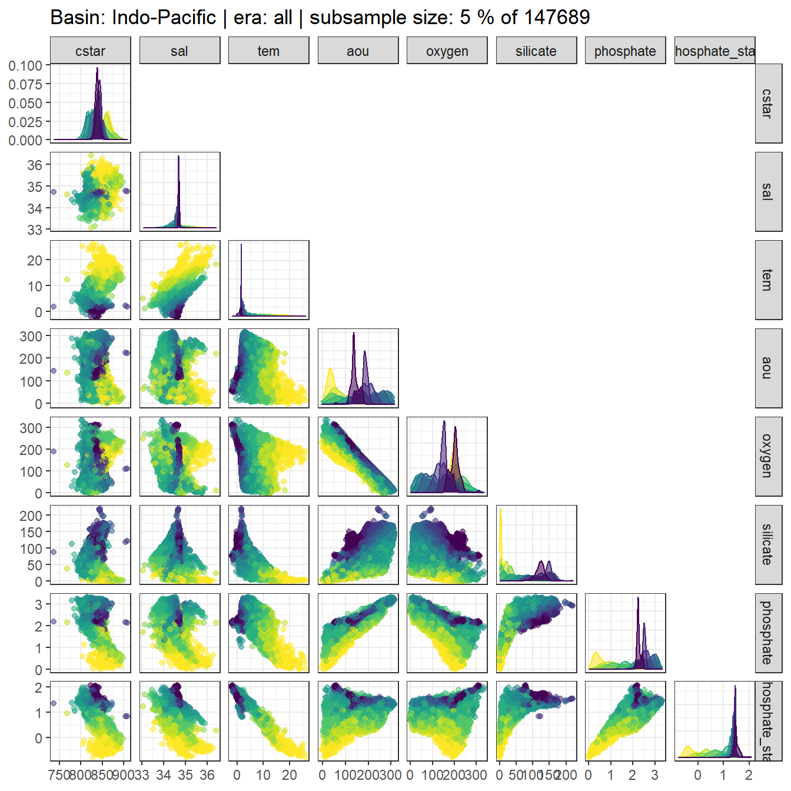

eMLR - assumption testing
Jens Daniel Müller
18 September, 2020
Last updated: 2020-09-18
Checks: 7 0
Knit directory: Cant_eMLR/
This reproducible R Markdown analysis was created with workflowr (version 1.6.2). The Checks tab describes the reproducibility checks that were applied when the results were created. The Past versions tab lists the development history.
Great! Since the R Markdown file has been committed to the Git repository, you know the exact version of the code that produced these results.
Great job! The global environment was empty. Objects defined in the global environment can affect the analysis in your R Markdown file in unknown ways. For reproduciblity it’s best to always run the code in an empty environment.
The command set.seed(20200707) was run prior to running the code in the R Markdown file. Setting a seed ensures that any results that rely on randomness, e.g. subsampling or permutations, are reproducible.
Great job! Recording the operating system, R version, and package versions is critical for reproducibility.
Nice! There were no cached chunks for this analysis, so you can be confident that you successfully produced the results during this run.
Great job! Using relative paths to the files within your workflowr project makes it easier to run your code on other machines.
Great! You are using Git for version control. Tracking code development and connecting the code version to the results is critical for reproducibility.
The results in this page were generated with repository version 27809b8. See the Past versions tab to see a history of the changes made to the R Markdown and HTML files.
Note that you need to be careful to ensure that all relevant files for the analysis have been committed to Git prior to generating the results (you can use wflow_publish or wflow_git_commit). workflowr only checks the R Markdown file, but you know if there are other scripts or data files that it depends on. Below is the status of the Git repository when the results were generated:
Ignored files:
Ignored: .Rproj.user/
Ignored: data/GLODAPv1_1/
Ignored: data/GLODAPv2_2016b_MappedClimatologies/
Ignored: data/GLODAPv2_2020/
Ignored: data/Gruber_2019/
Ignored: data/WOCE/
Ignored: data/World_Ocean_Atlas_2013_Clement/
Ignored: data/World_Ocean_Atlas_2018/
Ignored: data/eMLR/
Ignored: data/mapping/
Ignored: data/pCO2_atmosphere/
Ignored: dump/
Note that any generated files, e.g. HTML, png, CSS, etc., are not included in this status report because it is ok for generated content to have uncommitted changes.
These are the previous versions of the repository in which changes were made to the R Markdown (analysis/eMLR_assumption_testing.Rmd) and HTML (docs/eMLR_assumption_testing.html) files. If you’ve configured a remote Git repository (see ?wflow_git_remote), click on the hyperlinks in the table below to view the files as they were in that past version.
| File | Version | Author | Date | Message |
|---|---|---|---|---|
| html | f5a20ac | jens-daniel-mueller | 2020-09-17 | Build site. |
| html | cf64460 | jens-daniel-mueller | 2020-09-17 | Build site. |
| html | d43d9e2 | jens-daniel-mueller | 2020-09-16 | Build site. |
| html | 1f3319a | jens-daniel-mueller | 2020-09-16 | Build site. |
| html | da91d98 | jens-daniel-mueller | 2020-09-10 | Build site. |
| html | a34a239 | jens-daniel-mueller | 2020-09-10 | Build site. |
| html | c3ffdfd | jens-daniel-mueller | 2020-09-08 | Build site. |
| Rmd | 04ee730 | jens-daniel-mueller | 2020-09-08 | rebuild after revision |
| html | a50f053 | jens-daniel-mueller | 2020-09-07 | Build site. |
| html | da445a6 | jens-daniel-mueller | 2020-09-04 | Build site. |
| html | fa11a74 | jens-daniel-mueller | 2020-09-02 | Build site. |
| html | 429aab3 | jens-daniel-mueller | 2020-09-01 | Build site. |
| html | f4216dd | jens-daniel-mueller | 2020-09-01 | Build site. |
| Rmd | 8f3ce45 | jens-daniel-mueller | 2020-09-01 | rebuild without PO4 star selection, oxygen only |
| html | 13a76d5 | jens-daniel-mueller | 2020-08-28 | Build site. |
| html | 27404de | jens-daniel-mueller | 2020-08-27 | Build site. |
| html | b610bf7 | jens-daniel-mueller | 2020-08-27 | Build site. |
| Rmd | 96ab537 | jens-daniel-mueller | 2020-08-27 | revised |
| html | b6d0e6a | jens-daniel-mueller | 2020-08-27 | Build site. |
| html | f40e48b | jens-daniel-mueller | 2020-08-26 | Build site. |
| html | ec20f40 | jens-daniel-mueller | 2020-08-24 | Build site. |
| Rmd | a804955 | jens-daniel-mueller | 2020-08-24 | split mapping into 2 rmds, po4star selection in parameters, use po4star nitrate |
| html | 5ffe187 | jens-daniel-mueller | 2020-08-20 | Build site. |
| html | 1064ef8 | jens-daniel-mueller | 2020-08-19 | Build site. |
| Rmd | 94f9375 | jens-daniel-mueller | 2020-08-19 | split emlr into data preparation, assumption testing, and model fitting |
| html | 9af9978 | jens-daniel-mueller | 2020-08-19 | Build site. |
| Rmd | a6cb023 | jens-daniel-mueller | 2020-08-19 | split emlr into data preparation, assumption testing, and model fitting |
library(tidyverse)
library(lubridate)
library(patchwork)
library(GGally)
library(olsrr)
library(knitr)
library(kableExtra)
library(broom)
library(corrr)1 Required data
Required are:
- cleaned and prepared GLODAPv2.2020 file
GLODAP <-
read_csv(
here::here(
"data/GLODAPv2_2020/_summarized_data_files",
"GLODAP_MLR_fitting_ready.csv"
)
)2 Predictor correlation
The correlation between:
- pairs of seven potential predictor variables and
- C* and seven potential predictor variables
were investigated based on:
- property-property plots and
- calculated correlation coeffcients.
2.1 Correlation plots
For an overview, a random subset of data from all eras was plotted separately for both basins, with color indicating neutral density slabs (high density = dark-purple color).
GLODAP %>%
filter(basin == "Atlantic") %>%
sample_frac(0.05) %>%
ggpairs(columns = c("Cstar",
"sal",
"tem",
"aou",
"oxygen",
"silicate",
"phosphate",
"phosphate_star"),
upper = "blank",
ggplot2::aes(col = gamma_slab, fill = gamma_slab, alpha = 0.01)) +
scale_fill_viridis_d(direction = -1) +
scale_color_viridis_d(direction = -1) +
labs(title = paste("Basin: Atlantic | era: all | subsample size: 5 % of",
nrow(GLODAP %>% filter(basin == "Atlantic"))))
GLODAP %>%
filter(basin == "Indo-Pacific") %>%
sample_frac(0.05) %>%
ggpairs(columns = c("Cstar",
"sal",
"tem",
"aou",
"oxygen",
"silicate",
"phosphate",
"phosphate_star"),
upper = "blank",
ggplot2::aes(col = gamma_slab, fill = gamma_slab, alpha = 0.01)) +
scale_fill_viridis_d(direction = -1) +
scale_color_viridis_d(direction = -1) +
labs(title = paste("Basin: Indo-Pacific | era: all | subsample size: 5 % of",
nrow(GLODAP %>% filter(basin == "Indo-Pacific") )))
Individual correlation plots for each basin, era and neutral density (gamma) slab are available here.
for (i_basin in unique(GLODAP$basin)) {
for (i_era in unique(GLODAP$era)) {
# i_basin <- unique(GLODAP$basin)[1]
# i_era <- unique(GLODAP$era)[1]
print(i_basin)
print(i_era)
GLODAP_basin_era <- GLODAP %>%
filter(basin == i_basin,
era == i_era)
for (i_gamma_slab in unique(GLODAP_basin_era$gamma_slab)) {
# i_gamma_slab <- unique(GLODAP_basin_era$gamma_slab)[5]
print(i_gamma_slab)
GLODAP_highlight <- GLODAP_basin_era %>%
mutate(gamma_highlight = if_else(gamma_slab == i_gamma_slab,
"in", "out")) %>%
arrange(desc(gamma_highlight))
p <- GLODAP_highlight %>%
ggpairs(columns = c("Cstar",
"sal",
"tem",
"aou",
"oxygen",
"silicate",
"phosphate",
"phosphate_star"),
ggplot2::aes(col = gamma_highlight, fill = gamma_highlight, alpha = 0.01)) +
scale_fill_manual( values = c("red", "grey")) +
scale_color_manual(values = c("red", "grey")) +
labs(title = paste(i_basin,
"|", i_era,
"| Gamma slab", i_gamma_slab,
"| # obs total", nrow(GLODAP_basin_era),
"| # obs slab", nrow(GLODAP_highlight %>%
filter(gamma_highlight == "in"))))
png(here::here("output/figure/eMLR/predictor_correlation",
paste("predictor_correlation", i_basin, i_era, i_gamma_slab, ".png", sep = "_")),
width = 12, height = 12, units = "in", res = 300)
print(p)
dev.off()
}
}
}2.2 Correlation assesment
2.2.1 Calculation of correlation coeffcients
Correlation coefficients were calculated indivdually within each slabs, era and basin.
for (i_basin in unique(GLODAP$basin)) {
for (i_era in unique(GLODAP$era)) {
# i_basin <- unique(GLODAP$basin)[1]
# i_era <- unique(GLODAP$era)[1]
print(i_basin)
print(i_era)
GLODAP_basin_era <- GLODAP %>%
filter(basin == i_basin,
era == i_era) %>%
select(basin,
era,
gamma_slab,
Cstar,
sal,
tem,
aou,
oxygen,
silicate,
phosphate,
phosphate_star)
for (i_gamma_slab in unique(GLODAP_basin_era$gamma_slab)) {
# i_gamma_slab <- unique(GLODAP_basin_era$gamma_slab)[5]
print(i_gamma_slab)
GLODAP_basin_era_slab <- GLODAP_basin_era %>%
filter(gamma_slab == i_gamma_slab)
cor_Cstar_predictor_temp <- GLODAP_basin_era_slab %>%
select(-c(basin, era, gamma_slab)) %>%
correlate() %>%
focus(Cstar) %>%
mutate(basin = i_basin,
era = i_era,
gamma_slab = i_gamma_slab)
if (exists("cor_Cstar_predictor")) {
cor_Cstar_predictor <- bind_rows(cor_Cstar_predictor, cor_Cstar_predictor_temp)
}
if (!exists("cor_Cstar_predictor")) {
cor_Cstar_predictor <- cor_Cstar_predictor_temp
}
cor_predictors_temp <- GLODAP_basin_era_slab %>%
select(-c(basin, era, gamma_slab)) %>%
correlate() %>%
shave %>%
stretch() %>%
filter(!is.na(r),
x != "Cstar",
y != "Cstar") %>%
mutate(pair = paste(x, y, sep = " + ")) %>%
select(-c(x, y)) %>%
mutate(basin = i_basin,
era = i_era,
gamma_slab = i_gamma_slab)
if (exists("cor_predictors")) {
cor_predictors <- bind_rows(cor_predictors, cor_predictors_temp)
}
if (!exists("cor_predictors")) {
cor_predictors <- cor_predictors_temp
}
}
}
}
cor_predictors %>%
write_csv(here::here("data/eMLR",
"cor_predictors.csv"))
cor_Cstar_predictor %>%
write_csv(here::here("data/eMLR",
"cor_Cstar_predictor.csv"))
rm(cor_predictors_temp, cor_Cstar_predictor_temp,
i_gamma_slab, i_era, i_basin,
GLODAP_basin_era, GLODAP_basin_era_slab)2.2.2 Predictor pairs
Below, the range of correlations coefficients for each predictor pair is plotted per basin (facet) and density slab (color). Note that the range indicates the min and max values of in total 3 calculated coefficients (one per era).
cor_predictors <-
read_csv(here::here("data/eMLR",
"cor_predictors.csv"))
cor_predictors_stats <- cor_predictors %>%
group_by(pair, basin, gamma_slab) %>%
summarise(mean_r = mean(r),
min_r = min(r),
max_r = max(r)) %>%
ungroup()
cor_predictors_stats %>%
mutate(pair = reorder(pair, mean_r)) %>%
ggplot() +
geom_vline(xintercept = c(-0.9, 0.9), col = "red") +
geom_vline(xintercept = 0) +
geom_linerange(
aes(y = pair, xmin = min_r, xmax = max_r, col = gamma_slab),
position = position_dodge(width = 0.6)) +
facet_wrap(~basin) +
scale_color_viridis_d(direction = -1) +
labs(x = "correlation coefficient", y = "") +
theme(legend.position = "top")
kable(cor_predictors_stats) %>%
add_header_above() %>%
kable_styling() %>%
scroll_box(width = "100%", height = "400px")| pair | basin | gamma_slab | mean_r | min_r | max_r |
|---|---|---|---|---|---|
| aou + oxygen | Atlantic | (-Inf,26] | -0.8744951 | -0.9532480 | -0.7550657 |
| aou + oxygen | Atlantic | (26,26.5] | -0.8928017 | -0.9116213 | -0.8626230 |
| aou + oxygen | Atlantic | (26.5,26.75] | -0.9709528 | -0.9853712 | -0.9532336 |
| aou + oxygen | Atlantic | (26.75,27] | -0.9809623 | -0.9919156 | -0.9721363 |
| aou + oxygen | Atlantic | (27,27.25] | -0.9765937 | -0.9873629 | -0.9656568 |
| aou + oxygen | Atlantic | (27.25,27.5] | -0.9576435 | -0.9698052 | -0.9414392 |
| aou + oxygen | Atlantic | (27.5,27.75] | -0.9447924 | -0.9787555 | -0.9039997 |
| aou + oxygen | Atlantic | (27.75,27.85] | -0.9797866 | -0.9897796 | -0.9714857 |
| aou + oxygen | Atlantic | (27.85,27.95] | -0.9898797 | -0.9945695 | -0.9874212 |
| aou + oxygen | Atlantic | (27.95,28.05] | -0.9887998 | -0.9922556 | -0.9838948 |
| aou + oxygen | Atlantic | (28.05,28.1] | -0.9896339 | -0.9952500 | -0.9825876 |
| aou + oxygen | Atlantic | (28.1,28.15] | -0.9935035 | -0.9941873 | -0.9927118 |
| aou + oxygen | Atlantic | (28.15,28.2] | -0.9981190 | -0.9988974 | -0.9973732 |
| aou + oxygen | Atlantic | (28.2, Inf] | -0.9853070 | -0.9901291 | -0.9794869 |
| aou + oxygen | Indo-Pacific | (-Inf,26] | -0.9222403 | -0.9648243 | -0.8944247 |
| aou + oxygen | Indo-Pacific | (26,26.5] | -0.9817567 | -0.9851798 | -0.9751501 |
| aou + oxygen | Indo-Pacific | (26.5,26.75] | -0.9857078 | -0.9884323 | -0.9828218 |
| aou + oxygen | Indo-Pacific | (26.75,27] | -0.9842537 | -0.9858790 | -0.9833858 |
| aou + oxygen | Indo-Pacific | (27,27.25] | -0.9911226 | -0.9929362 | -0.9875183 |
| aou + oxygen | Indo-Pacific | (27.25,27.5] | -0.9923416 | -0.9952253 | -0.9869215 |
| aou + oxygen | Indo-Pacific | (27.5,27.75] | -0.9913228 | -0.9937264 | -0.9871762 |
| aou + oxygen | Indo-Pacific | (27.75,27.85] | -0.9962436 | -0.9989588 | -0.9925954 |
| aou + oxygen | Indo-Pacific | (27.85,27.95] | -0.9968024 | -0.9990037 | -0.9945821 |
| aou + oxygen | Indo-Pacific | (27.95,28.05] | -0.9952160 | -0.9964597 | -0.9934060 |
| aou + oxygen | Indo-Pacific | (28.05,28.1] | -0.9955718 | -0.9966395 | -0.9947009 |
| aou + oxygen | Indo-Pacific | (28.1, Inf] | -0.9906674 | -0.9923622 | -0.9880347 |
| aou + phosphate | Atlantic | (-Inf,26] | 0.4968122 | 0.3638387 | 0.7534274 |
| aou + phosphate | Atlantic | (26,26.5] | 0.7641124 | 0.6244155 | 0.9141044 |
| aou + phosphate | Atlantic | (26.5,26.75] | 0.8880658 | 0.8443179 | 0.9253055 |
| aou + phosphate | Atlantic | (26.75,27] | 0.8786413 | 0.8348164 | 0.9236598 |
| aou + phosphate | Atlantic | (27,27.25] | 0.8091468 | 0.7318366 | 0.8485086 |
| aou + phosphate | Atlantic | (27.25,27.5] | 0.7122937 | 0.6559382 | 0.7946690 |
| aou + phosphate | Atlantic | (27.5,27.75] | 0.8625945 | 0.7989246 | 0.9191590 |
| aou + phosphate | Atlantic | (27.75,27.85] | 0.9477225 | 0.9344415 | 0.9685048 |
| aou + phosphate | Atlantic | (27.85,27.95] | 0.9564487 | 0.9506825 | 0.9678539 |
| aou + phosphate | Atlantic | (27.95,28.05] | 0.9647851 | 0.9549794 | 0.9837130 |
| aou + phosphate | Atlantic | (28.05,28.1] | 0.9732776 | 0.9559239 | 0.9908326 |
| aou + phosphate | Atlantic | (28.1,28.15] | 0.9815547 | 0.9796185 | 0.9825504 |
| aou + phosphate | Atlantic | (28.15,28.2] | 0.9924206 | 0.9884359 | 0.9944703 |
| aou + phosphate | Atlantic | (28.2, Inf] | 0.8830515 | 0.8333392 | 0.9476787 |
| aou + phosphate | Indo-Pacific | (-Inf,26] | 0.9398603 | 0.9073459 | 0.9652186 |
| aou + phosphate | Indo-Pacific | (26,26.5] | 0.9557733 | 0.9501386 | 0.9635691 |
| aou + phosphate | Indo-Pacific | (26.5,26.75] | 0.9519789 | 0.9400321 | 0.9634390 |
| aou + phosphate | Indo-Pacific | (26.75,27] | 0.9507942 | 0.9467086 | 0.9534511 |
| aou + phosphate | Indo-Pacific | (27,27.25] | 0.9694261 | 0.9583231 | 0.9793700 |
| aou + phosphate | Indo-Pacific | (27.25,27.5] | 0.9678539 | 0.9567363 | 0.9782759 |
| aou + phosphate | Indo-Pacific | (27.5,27.75] | 0.9559835 | 0.9504486 | 0.9588588 |
| aou + phosphate | Indo-Pacific | (27.75,27.85] | 0.9801212 | 0.9676378 | 0.9882700 |
| aou + phosphate | Indo-Pacific | (27.85,27.95] | 0.9789711 | 0.9673576 | 0.9891496 |
| aou + phosphate | Indo-Pacific | (27.95,28.05] | 0.9660782 | 0.9526171 | 0.9762091 |
| aou + phosphate | Indo-Pacific | (28.05,28.1] | 0.9572898 | 0.9436662 | 0.9717865 |
| aou + phosphate | Indo-Pacific | (28.1, Inf] | 0.7745639 | 0.7085203 | 0.8296353 |
| aou + phosphate_star | Atlantic | (-Inf,26] | 0.0145143 | -0.3835054 | 0.3613286 |
| aou + phosphate_star | Atlantic | (26,26.5] | 0.4309855 | 0.1305440 | 0.7973664 |
| aou + phosphate_star | Atlantic | (26.5,26.75] | 0.4754444 | 0.3786756 | 0.6312599 |
| aou + phosphate_star | Atlantic | (26.75,27] | 0.2257769 | 0.1039011 | 0.3114682 |
| aou + phosphate_star | Atlantic | (27,27.25] | 0.0989863 | -0.0300644 | 0.2655859 |
| aou + phosphate_star | Atlantic | (27.25,27.5] | 0.1072129 | -0.0543588 | 0.2934923 |
| aou + phosphate_star | Atlantic | (27.5,27.75] | 0.5858374 | 0.4967914 | 0.6723848 |
| aou + phosphate_star | Atlantic | (27.75,27.85] | 0.7668331 | 0.7256135 | 0.8354674 |
| aou + phosphate_star | Atlantic | (27.85,27.95] | 0.7157592 | 0.6570582 | 0.7612857 |
| aou + phosphate_star | Atlantic | (27.95,28.05] | 0.8313910 | 0.7659760 | 0.9225603 |
| aou + phosphate_star | Atlantic | (28.05,28.1] | 0.8986136 | 0.8389479 | 0.9666603 |
| aou + phosphate_star | Atlantic | (28.1,28.15] | 0.9290563 | 0.9243324 | 0.9334624 |
| aou + phosphate_star | Atlantic | (28.15,28.2] | 0.9758187 | 0.9598386 | 0.9848581 |
| aou + phosphate_star | Atlantic | (28.2, Inf] | 0.6693854 | 0.5214380 | 0.8430861 |
| aou + phosphate_star | Indo-Pacific | (-Inf,26] | 0.6635076 | 0.5365101 | 0.7308746 |
| aou + phosphate_star | Indo-Pacific | (26,26.5] | 0.5850300 | 0.5283222 | 0.6191985 |
| aou + phosphate_star | Indo-Pacific | (26.5,26.75] | 0.4233210 | 0.1714451 | 0.5744471 |
| aou + phosphate_star | Indo-Pacific | (26.75,27] | 0.3780834 | 0.3170706 | 0.4680210 |
| aou + phosphate_star | Indo-Pacific | (27,27.25] | 0.1046935 | -0.0646039 | 0.2304386 |
| aou + phosphate_star | Indo-Pacific | (27.25,27.5] | -0.3929753 | -0.4402015 | -0.3468684 |
| aou + phosphate_star | Indo-Pacific | (27.5,27.75] | -0.3179611 | -0.5790716 | 0.0550511 |
| aou + phosphate_star | Indo-Pacific | (27.75,27.85] | -0.5108387 | -0.6069887 | -0.4610359 |
| aou + phosphate_star | Indo-Pacific | (27.85,27.95] | -0.1043699 | -0.1249379 | -0.0894779 |
| aou + phosphate_star | Indo-Pacific | (27.95,28.05] | 0.2063707 | 0.1146331 | 0.2547488 |
| aou + phosphate_star | Indo-Pacific | (28.05,28.1] | 0.4001063 | 0.3629452 | 0.4355366 |
| aou + phosphate_star | Indo-Pacific | (28.1, Inf] | -0.6259779 | -0.6534660 | -0.5902370 |
| aou + silicate | Atlantic | (-Inf,26] | 0.2987799 | 0.1044441 | 0.5614779 |
| aou + silicate | Atlantic | (26,26.5] | 0.6794063 | 0.5696117 | 0.7731182 |
| aou + silicate | Atlantic | (26.5,26.75] | 0.8887758 | 0.8630962 | 0.9271642 |
| aou + silicate | Atlantic | (26.75,27] | 0.8764151 | 0.8471669 | 0.8995388 |
| aou + silicate | Atlantic | (27,27.25] | 0.7479100 | 0.6997376 | 0.8319519 |
| aou + silicate | Atlantic | (27.25,27.5] | 0.4438676 | 0.2146462 | 0.6752329 |
| aou + silicate | Atlantic | (27.5,27.75] | 0.6402675 | 0.5689181 | 0.6986885 |
| aou + silicate | Atlantic | (27.75,27.85] | 0.8510878 | 0.8229728 | 0.8739330 |
| aou + silicate | Atlantic | (27.85,27.95] | 0.8971335 | 0.8846068 | 0.9099369 |
| aou + silicate | Atlantic | (27.95,28.05] | 0.9465850 | 0.9397945 | 0.9589041 |
| aou + silicate | Atlantic | (28.05,28.1] | 0.9739381 | 0.9624195 | 0.9871533 |
| aou + silicate | Atlantic | (28.1,28.15] | 0.9777401 | 0.9725516 | 0.9810434 |
| aou + silicate | Atlantic | (28.15,28.2] | 0.9908012 | 0.9860583 | 0.9931757 |
| aou + silicate | Atlantic | (28.2, Inf] | 0.8883286 | 0.8598489 | 0.9336248 |
| aou + silicate | Indo-Pacific | (-Inf,26] | 0.7405176 | 0.6735469 | 0.8083943 |
| aou + silicate | Indo-Pacific | (26,26.5] | 0.6553734 | 0.5412607 | 0.7539002 |
| aou + silicate | Indo-Pacific | (26.5,26.75] | 0.6105827 | 0.4114196 | 0.7331854 |
| aou + silicate | Indo-Pacific | (26.75,27] | 0.7472063 | 0.6944176 | 0.7754477 |
| aou + silicate | Indo-Pacific | (27,27.25] | 0.8772314 | 0.8489046 | 0.9054532 |
| aou + silicate | Indo-Pacific | (27.25,27.5] | 0.9047144 | 0.8720824 | 0.9345711 |
| aou + silicate | Indo-Pacific | (27.5,27.75] | 0.9212495 | 0.8747726 | 0.9475579 |
| aou + silicate | Indo-Pacific | (27.75,27.85] | 0.9657728 | 0.9482675 | 0.9761788 |
| aou + silicate | Indo-Pacific | (27.85,27.95] | 0.9635757 | 0.9528140 | 0.9707016 |
| aou + silicate | Indo-Pacific | (27.95,28.05] | 0.9484077 | 0.9397009 | 0.9533188 |
| aou + silicate | Indo-Pacific | (28.05,28.1] | 0.9490639 | 0.9469555 | 0.9521004 |
| aou + silicate | Indo-Pacific | (28.1, Inf] | 0.6106517 | 0.4938535 | 0.6701454 |
| oxygen + phosphate | Atlantic | (-Inf,26] | -0.2097183 | -0.5330675 | 0.0641100 |
| oxygen + phosphate | Atlantic | (26,26.5] | -0.4403792 | -0.6340318 | -0.2472538 |
| oxygen + phosphate | Atlantic | (26.5,26.75] | -0.7604488 | -0.8187532 | -0.6462628 |
| oxygen + phosphate | Atlantic | (26.75,27] | -0.7727126 | -0.8699366 | -0.6845179 |
| oxygen + phosphate | Atlantic | (27,27.25] | -0.6681406 | -0.7567931 | -0.5324042 |
| oxygen + phosphate | Atlantic | (27.25,27.5] | -0.4894853 | -0.6023989 | -0.3682809 |
| oxygen + phosphate | Atlantic | (27.5,27.75] | -0.6682636 | -0.8356437 | -0.4808235 |
| oxygen + phosphate | Atlantic | (27.75,27.85] | -0.8713950 | -0.9294737 | -0.8300408 |
| oxygen + phosphate | Atlantic | (27.85,27.95] | -0.9120444 | -0.9438204 | -0.8956368 |
| oxygen + phosphate | Atlantic | (27.95,28.05] | -0.9276978 | -0.9649796 | -0.8964564 |
| oxygen + phosphate | Atlantic | (28.05,28.1] | -0.9396517 | -0.9823000 | -0.8931189 |
| oxygen + phosphate | Atlantic | (28.1,28.15] | -0.9596885 | -0.9645177 | -0.9533572 |
| oxygen + phosphate | Atlantic | (28.15,28.2] | -0.9888486 | -0.9941651 | -0.9794616 |
| oxygen + phosphate | Atlantic | (28.2, Inf] | -0.8110368 | -0.9066712 | -0.7332935 |
| oxygen + phosphate | Indo-Pacific | (-Inf,26] | -0.7865098 | -0.9035893 | -0.6911767 |
| oxygen + phosphate | Indo-Pacific | (26,26.5] | -0.8893306 | -0.9097896 | -0.8643727 |
| oxygen + phosphate | Indo-Pacific | (26.5,26.75] | -0.8920560 | -0.9169115 | -0.8743261 |
| oxygen + phosphate | Indo-Pacific | (26.75,27] | -0.8857405 | -0.8924461 | -0.8770192 |
| oxygen + phosphate | Indo-Pacific | (27,27.25] | -0.9345932 | -0.9555223 | -0.9085882 |
| oxygen + phosphate | Indo-Pacific | (27.25,27.5] | -0.9443983 | -0.9628806 | -0.9101495 |
| oxygen + phosphate | Indo-Pacific | (27.5,27.75] | -0.9524459 | -0.9705716 | -0.9238051 |
| oxygen + phosphate | Indo-Pacific | (27.75,27.85] | -0.9726573 | -0.9887108 | -0.9508526 |
| oxygen + phosphate | Indo-Pacific | (27.85,27.95] | -0.9704560 | -0.9878743 | -0.9530411 |
| oxygen + phosphate | Indo-Pacific | (27.95,28.05] | -0.9449627 | -0.9593013 | -0.9249979 |
| oxygen + phosphate | Indo-Pacific | (28.05,28.1] | -0.9335436 | -0.9530637 | -0.9199149 |
| oxygen + phosphate | Indo-Pacific | (28.1, Inf] | -0.6947993 | -0.7608957 | -0.6114751 |
| oxygen + phosphate_star | Atlantic | (-Inf,26] | 0.3168495 | -0.0522981 | 0.5912718 |
| oxygen + phosphate_star | Atlantic | (26,26.5] | -0.0343583 | -0.4264965 | 0.2930814 |
| oxygen + phosphate_star | Atlantic | (26.5,26.75] | -0.2663354 | -0.4434271 | -0.1254908 |
| oxygen + phosphate_star | Atlantic | (26.75,27] | -0.0416979 | -0.1139364 | 0.0194293 |
| oxygen + phosphate_star | Atlantic | (27,27.25] | 0.1091487 | -0.0547093 | 0.1974791 |
| oxygen + phosphate_star | Atlantic | (27.25,27.5] | 0.1723742 | -0.0247255 | 0.2877875 |
| oxygen + phosphate_star | Atlantic | (27.5,27.75] | -0.3142864 | -0.5268758 | -0.0919431 |
| oxygen + phosphate_star | Atlantic | (27.75,27.85] | -0.6323034 | -0.7572882 | -0.5494056 |
| oxygen + phosphate_star | Atlantic | (27.85,27.95] | -0.6205413 | -0.7022832 | -0.5381723 |
| oxygen + phosphate_star | Atlantic | (27.95,28.05] | -0.7581342 | -0.8823882 | -0.6928307 |
| oxygen + phosphate_star | Atlantic | (28.05,28.1] | -0.8389178 | -0.9489401 | -0.7332754 |
| oxygen + phosphate_star | Atlantic | (28.1,28.15] | -0.8890996 | -0.8995874 | -0.8780862 |
| oxygen + phosphate_star | Atlantic | (28.15,28.2] | -0.9685998 | -0.9835994 | -0.9433078 |
| oxygen + phosphate_star | Atlantic | (28.2, Inf] | -0.5598355 | -0.7760591 | -0.3719431 |
| oxygen + phosphate_star | Indo-Pacific | (-Inf,26] | -0.3768827 | -0.5721682 | -0.1581506 |
| oxygen + phosphate_star | Indo-Pacific | (26,26.5] | -0.4310981 | -0.4716659 | -0.3832217 |
| oxygen + phosphate_star | Indo-Pacific | (26.5,26.75] | -0.2761817 | -0.4204869 | -0.0107690 |
| oxygen + phosphate_star | Indo-Pacific | (26.75,27] | -0.2158619 | -0.3063233 | -0.1610062 |
| oxygen + phosphate_star | Indo-Pacific | (27,27.25] | 0.0143214 | -0.1284575 | 0.2101823 |
| oxygen + phosphate_star | Indo-Pacific | (27.25,27.5] | 0.4722123 | 0.3926608 | 0.5641524 |
| oxygen + phosphate_star | Indo-Pacific | (27.5,27.75] | 0.3351458 | -0.1110929 | 0.6774513 |
| oxygen + phosphate_star | Indo-Pacific | (27.75,27.85] | 0.5478980 | 0.5027570 | 0.6107350 |
| oxygen + phosphate_star | Indo-Pacific | (27.85,27.95] | 0.1485897 | 0.1040564 | 0.1786718 |
| oxygen + phosphate_star | Indo-Pacific | (27.95,28.05] | -0.1298131 | -0.1832322 | -0.0429496 |
| oxygen + phosphate_star | Indo-Pacific | (28.05,28.1] | -0.3278087 | -0.3709249 | -0.2777786 |
| oxygen + phosphate_star | Indo-Pacific | (28.1, Inf] | 0.7164403 | 0.6935518 | 0.7362525 |
| oxygen + silicate | Atlantic | (-Inf,26] | 0.0057310 | -0.3729399 | 0.2547323 |
| oxygen + silicate | Atlantic | (26,26.5] | -0.3572027 | -0.4412467 | -0.2196602 |
| oxygen + silicate | Atlantic | (26.5,26.75] | -0.7809394 | -0.8384766 | -0.7128232 |
| oxygen + silicate | Atlantic | (26.75,27] | -0.7892305 | -0.8538472 | -0.7283823 |
| oxygen + silicate | Atlantic | (27,27.25] | -0.6107628 | -0.7114408 | -0.5273237 |
| oxygen + silicate | Atlantic | (27.25,27.5] | -0.1992683 | -0.4675085 | 0.0076628 |
| oxygen + silicate | Atlantic | (27.5,27.75] | -0.3978143 | -0.5585579 | -0.2077947 |
| oxygen + silicate | Atlantic | (27.75,27.85] | -0.7471095 | -0.8055428 | -0.6893571 |
| oxygen + silicate | Atlantic | (27.85,27.95] | -0.8338081 | -0.8689700 | -0.8084271 |
| oxygen + silicate | Atlantic | (27.95,28.05] | -0.8947868 | -0.9217279 | -0.8701926 |
| oxygen + silicate | Atlantic | (28.05,28.1] | -0.9361353 | -0.9705661 | -0.9012119 |
| oxygen + silicate | Atlantic | (28.1,28.15] | -0.9528808 | -0.9577208 | -0.9466942 |
| oxygen + silicate | Atlantic | (28.15,28.2] | -0.9873000 | -0.9917614 | -0.9801661 |
| oxygen + silicate | Atlantic | (28.2, Inf] | -0.8177380 | -0.8882214 | -0.7650393 |
| oxygen + silicate | Indo-Pacific | (-Inf,26] | -0.5186484 | -0.7110923 | -0.3753133 |
| oxygen + silicate | Indo-Pacific | (26,26.5] | -0.5436834 | -0.6719729 | -0.4230167 |
| oxygen + silicate | Indo-Pacific | (26.5,26.75] | -0.4958679 | -0.6462347 | -0.2778429 |
| oxygen + silicate | Indo-Pacific | (26.75,27] | -0.6369489 | -0.6783871 | -0.5691764 |
| oxygen + silicate | Indo-Pacific | (27,27.25] | -0.8184398 | -0.8577641 | -0.7726444 |
| oxygen + silicate | Indo-Pacific | (27.25,27.5] | -0.8590908 | -0.9034735 | -0.8036451 |
| oxygen + silicate | Indo-Pacific | (27.5,27.75] | -0.8792800 | -0.9181349 | -0.8076714 |
| oxygen + silicate | Indo-Pacific | (27.75,27.85] | -0.9504507 | -0.9721608 | -0.9182192 |
| oxygen + silicate | Indo-Pacific | (27.85,27.95] | -0.9492801 | -0.9648050 | -0.9304148 |
| oxygen + silicate | Indo-Pacific | (27.95,28.05] | -0.9233967 | -0.9324068 | -0.9079219 |
| oxygen + silicate | Indo-Pacific | (28.05,28.1] | -0.9260855 | -0.9261657 | -0.9259823 |
| oxygen + silicate | Indo-Pacific | (28.1, Inf] | -0.5200014 | -0.5940584 | -0.3780700 |
| phosphate + phosphate_star | Atlantic | (-Inf,26] | 0.8366724 | 0.7013365 | 0.9358873 |
| phosphate + phosphate_star | Atlantic | (26,26.5] | 0.9027027 | 0.8539362 | 0.9698602 |
| phosphate + phosphate_star | Atlantic | (26.5,26.75] | 0.8219230 | 0.7499166 | 0.8776701 |
| phosphate + phosphate_star | Atlantic | (26.75,27] | 0.6513862 | 0.4761682 | 0.7495921 |
| phosphate + phosphate_star | Atlantic | (27,27.25] | 0.6547696 | 0.5026497 | 0.7369773 |
| phosphate + phosphate_star | Atlantic | (27.25,27.5] | 0.7686163 | 0.6873597 | 0.8128458 |
| phosphate + phosphate_star | Atlantic | (27.5,27.75] | 0.9112499 | 0.9071298 | 0.9173118 |
| phosphate + phosphate_star | Atlantic | (27.75,27.85] | 0.9301176 | 0.9220208 | 0.9447934 |
| phosphate + phosphate_star | Atlantic | (27.85,27.95] | 0.8862937 | 0.8568882 | 0.9039108 |
| phosphate + phosphate_star | Atlantic | (27.95,28.05] | 0.9456202 | 0.9183428 | 0.9749163 |
| phosphate + phosphate_star | Atlantic | (28.05,28.1] | 0.9739709 | 0.9607495 | 0.9912334 |
| phosphate + phosphate_star | Atlantic | (28.1,28.15] | 0.9818775 | 0.9810939 | 0.9829755 |
| phosphate + phosphate_star | Atlantic | (28.15,28.2] | 0.9948048 | 0.9908589 | 0.9973162 |
| phosphate + phosphate_star | Atlantic | (28.2, Inf] | 0.9369956 | 0.9038758 | 0.9696669 |
| phosphate + phosphate_star | Indo-Pacific | (-Inf,26] | 0.8626126 | 0.8229008 | 0.8965856 |
| phosphate + phosphate_star | Indo-Pacific | (26,26.5] | 0.7942409 | 0.7567088 | 0.8308982 |
| phosphate + phosphate_star | Indo-Pacific | (26.5,26.75] | 0.6732999 | 0.4947265 | 0.7946515 |
| phosphate + phosphate_star | Indo-Pacific | (26.75,27] | 0.6425884 | 0.5889574 | 0.7260100 |
| phosphate + phosphate_star | Indo-Pacific | (27,27.25] | 0.3369543 | 0.2173935 | 0.4152194 |
| phosphate + phosphate_star | Indo-Pacific | (27.25,27.5] | -0.1648297 | -0.2030567 | -0.1200281 |
| phosphate + phosphate_star | Indo-Pacific | (27.5,27.75] | -0.0592076 | -0.3442113 | 0.3471456 |
| phosphate + phosphate_star | Indo-Pacific | (27.75,27.85] | -0.3466805 | -0.4851947 | -0.2416060 |
| phosphate + phosphate_star | Indo-Pacific | (27.85,27.95] | 0.0863466 | 0.0516182 | 0.1434043 |
| phosphate + phosphate_star | Indo-Pacific | (27.95,28.05] | 0.4428626 | 0.3233255 | 0.5258873 |
| phosphate + phosphate_star | Indo-Pacific | (28.05,28.1] | 0.6420374 | 0.6043170 | 0.7053648 |
| phosphate + phosphate_star | Indo-Pacific | (28.1, Inf] | 0.0000038 | -0.0968503 | 0.1459421 |
| sal + aou | Atlantic | (-Inf,26] | -0.1538915 | -0.4515416 | 0.3401064 |
| sal + aou | Atlantic | (26,26.5] | -0.3261753 | -0.7540350 | -0.0084345 |
| sal + aou | Atlantic | (26.5,26.75] | -0.3072144 | -0.5217668 | -0.0916656 |
| sal + aou | Atlantic | (26.75,27] | -0.1666310 | -0.2660313 | -0.0177829 |
| sal + aou | Atlantic | (27,27.25] | -0.1070467 | -0.3120064 | 0.0635546 |
| sal + aou | Atlantic | (27.25,27.5] | -0.0826868 | -0.3033727 | 0.1416707 |
| sal + aou | Atlantic | (27.5,27.75] | -0.5184206 | -0.6267639 | -0.4312143 |
| sal + aou | Atlantic | (27.75,27.85] | -0.5753079 | -0.6975269 | -0.4964268 |
| sal + aou | Atlantic | (27.85,27.95] | -0.3781894 | -0.4883712 | -0.2183147 |
| sal + aou | Atlantic | (27.95,28.05] | -0.5892945 | -0.7803165 | -0.3473102 |
| sal + aou | Atlantic | (28.05,28.1] | -0.7801121 | -0.8742677 | -0.7123394 |
| sal + aou | Atlantic | (28.1,28.15] | -0.8419324 | -0.8513282 | -0.8278153 |
| sal + aou | Atlantic | (28.15,28.2] | -0.9543838 | -0.9830836 | -0.9195484 |
| sal + aou | Atlantic | (28.2, Inf] | -0.7050270 | -0.8728466 | -0.5491999 |
| sal + aou | Indo-Pacific | (-Inf,26] | -0.0983416 | -0.1362632 | -0.0404032 |
| sal + aou | Indo-Pacific | (26,26.5] | -0.0365782 | -0.2389236 | 0.1422082 |
| sal + aou | Indo-Pacific | (26.5,26.75] | -0.0392295 | -0.3469581 | 0.2691660 |
| sal + aou | Indo-Pacific | (26.75,27] | -0.1411806 | -0.3325284 | 0.0425034 |
| sal + aou | Indo-Pacific | (27,27.25] | -0.0354575 | -0.1807429 | 0.2378284 |
| sal + aou | Indo-Pacific | (27.25,27.5] | 0.1576511 | 0.0696781 | 0.3310956 |
| sal + aou | Indo-Pacific | (27.5,27.75] | 0.3155106 | 0.1461021 | 0.4873061 |
| sal + aou | Indo-Pacific | (27.75,27.85] | -0.1382372 | -0.4067723 | 0.1790983 |
| sal + aou | Indo-Pacific | (27.85,27.95] | -0.3424872 | -0.6909878 | -0.0345708 |
| sal + aou | Indo-Pacific | (27.95,28.05] | -0.3567260 | -0.4628403 | -0.1932531 |
| sal + aou | Indo-Pacific | (28.05,28.1] | -0.4506086 | -0.5903153 | -0.3757216 |
| sal + aou | Indo-Pacific | (28.1, Inf] | 0.4048742 | 0.2776228 | 0.5001921 |
| sal + oxygen | Atlantic | (-Inf,26] | -0.2791495 | -0.5960177 | -0.0059156 |
| sal + oxygen | Atlantic | (26,26.5] | -0.0875562 | -0.4095952 | 0.3368707 |
| sal + oxygen | Atlantic | (26.5,26.75] | 0.0864475 | -0.0688608 | 0.3188689 |
| sal + oxygen | Atlantic | (26.75,27] | -0.0171341 | -0.1041628 | 0.0675860 |
| sal + oxygen | Atlantic | (27,27.25] | -0.0979371 | -0.2155982 | 0.1058968 |
| sal + oxygen | Atlantic | (27.25,27.5] | -0.1911858 | -0.3654957 | 0.0376950 |
| sal + oxygen | Atlantic | (27.5,27.75] | 0.2375435 | 0.0218404 | 0.4698472 |
| sal + oxygen | Atlantic | (27.75,27.85] | 0.4094550 | 0.2838580 | 0.5949899 |
| sal + oxygen | Atlantic | (27.85,27.95] | 0.2565773 | 0.0717079 | 0.4067475 |
| sal + oxygen | Atlantic | (27.95,28.05] | 0.4868587 | 0.2388276 | 0.7141258 |
| sal + oxygen | Atlantic | (28.05,28.1] | 0.6904547 | 0.5760422 | 0.8286557 |
| sal + oxygen | Atlantic | (28.1,28.15] | 0.7776342 | 0.7646442 | 0.7893789 |
| sal + oxygen | Atlantic | (28.15,28.2] | 0.9366828 | 0.8917166 | 0.9747515 |
| sal + oxygen | Atlantic | (28.2, Inf] | 0.5990942 | 0.4001001 | 0.8089437 |
| sal + oxygen | Indo-Pacific | (-Inf,26] | -0.2076327 | -0.3119330 | -0.1068274 |
| sal + oxygen | Indo-Pacific | (26,26.5] | -0.1382975 | -0.2938802 | 0.0296760 |
| sal + oxygen | Indo-Pacific | (26.5,26.75] | -0.1194026 | -0.4206464 | 0.1714727 |
| sal + oxygen | Indo-Pacific | (26.75,27] | -0.0292660 | -0.2049693 | 0.1605998 |
| sal + oxygen | Indo-Pacific | (27,27.25] | -0.0873227 | -0.3826493 | 0.0696590 |
| sal + oxygen | Indo-Pacific | (27.25,27.5] | -0.2598163 | -0.4698602 | -0.1532731 |
| sal + oxygen | Indo-Pacific | (27.5,27.75] | -0.4165459 | -0.5711775 | -0.2337704 |
| sal + oxygen | Indo-Pacific | (27.75,27.85] | 0.0714369 | -0.2887517 | 0.3795302 |
| sal + oxygen | Indo-Pacific | (27.85,27.95] | 0.2871192 | -0.0567783 | 0.6785443 |
| sal + oxygen | Indo-Pacific | (27.95,28.05] | 0.2822572 | 0.0961876 | 0.4050225 |
| sal + oxygen | Indo-Pacific | (28.05,28.1] | 0.3745003 | 0.2866614 | 0.5337856 |
| sal + oxygen | Indo-Pacific | (28.1, Inf] | -0.4980794 | -0.6005821 | -0.3714070 |
| sal + phosphate | Atlantic | (-Inf,26] | -0.6599963 | -0.7555920 | -0.5470789 |
| sal + phosphate | Atlantic | (26,26.5] | -0.8135489 | -0.9106026 | -0.7566057 |
| sal + phosphate | Atlantic | (26.5,26.75] | -0.6653202 | -0.7967515 | -0.4410535 |
| sal + phosphate | Atlantic | (26.75,27] | -0.5897322 | -0.7100115 | -0.3766178 |
| sal + phosphate | Atlantic | (27,27.25] | -0.6459851 | -0.7604768 | -0.4561307 |
| sal + phosphate | Atlantic | (27.25,27.5] | -0.7287542 | -0.8049815 | -0.5862463 |
| sal + phosphate | Atlantic | (27.5,27.75] | -0.8378205 | -0.8497679 | -0.8282031 |
| sal + phosphate | Atlantic | (27.75,27.85] | -0.7710703 | -0.8147986 | -0.7401364 |
| sal + phosphate | Atlantic | (27.85,27.95] | -0.5935291 | -0.6543204 | -0.4758303 |
| sal + phosphate | Atlantic | (27.95,28.05] | -0.7337096 | -0.8381198 | -0.5580468 |
| sal + phosphate | Atlantic | (28.05,28.1] | -0.8665101 | -0.8969644 | -0.8442174 |
| sal + phosphate | Atlantic | (28.1,28.15] | -0.9029896 | -0.9164070 | -0.8858286 |
| sal + phosphate | Atlantic | (28.15,28.2] | -0.9612288 | -0.9794588 | -0.9513050 |
| sal + phosphate | Atlantic | (28.2, Inf] | -0.9425443 | -0.9784202 | -0.8997127 |
| sal + phosphate | Indo-Pacific | (-Inf,26] | -0.2127158 | -0.2517474 | -0.1875588 |
| sal + phosphate | Indo-Pacific | (26,26.5] | -0.2657349 | -0.4815839 | -0.0892084 |
| sal + phosphate | Indo-Pacific | (26.5,26.75] | -0.2904446 | -0.5814583 | -0.0309332 |
| sal + phosphate | Indo-Pacific | (26.75,27] | -0.3946057 | -0.5848884 | -0.2170796 |
| sal + phosphate | Indo-Pacific | (27,27.25] | -0.2048285 | -0.3364505 | 0.0192774 |
| sal + phosphate | Indo-Pacific | (27.25,27.5] | 0.0666682 | -0.0104047 | 0.1397674 |
| sal + phosphate | Indo-Pacific | (27.5,27.75] | 0.3554885 | 0.1759561 | 0.6708373 |
| sal + phosphate | Indo-Pacific | (27.75,27.85] | -0.1670470 | -0.3806254 | 0.1099582 |
| sal + phosphate | Indo-Pacific | (27.85,27.95] | -0.3945302 | -0.6929436 | -0.1073552 |
| sal + phosphate | Indo-Pacific | (27.95,28.05] | -0.5035176 | -0.5971062 | -0.3572814 |
| sal + phosphate | Indo-Pacific | (28.05,28.1] | -0.6147126 | -0.7196567 | -0.5515331 |
| sal + phosphate | Indo-Pacific | (28.1, Inf] | -0.1309190 | -0.2260296 | -0.0730431 |
| sal + phosphate_star | Atlantic | (-Inf,26] | -0.8247835 | -0.8952484 | -0.7017069 |
| sal + phosphate_star | Atlantic | (26,26.5] | -0.9616807 | -0.9665357 | -0.9589304 |
| sal + phosphate_star | Atlantic | (26.5,26.75] | -0.9262080 | -0.9789761 | -0.8219973 |
| sal + phosphate_star | Atlantic | (26.75,27] | -0.9716301 | -0.9869633 | -0.9492646 |
| sal + phosphate_star | Atlantic | (27,27.25] | -0.9800924 | -0.9852559 | -0.9709525 |
| sal + phosphate_star | Atlantic | (27.25,27.5] | -0.9725945 | -0.9836728 | -0.9534248 |
| sal + phosphate_star | Atlantic | (27.5,27.75] | -0.9471118 | -0.9551274 | -0.9328407 |
| sal + phosphate_star | Atlantic | (27.75,27.85] | -0.9155641 | -0.9208389 | -0.9118343 |
| sal + phosphate_star | Atlantic | (27.85,27.95] | -0.8522637 | -0.8700207 | -0.8185524 |
| sal + phosphate_star | Atlantic | (27.95,28.05] | -0.8701156 | -0.9194460 | -0.7935036 |
| sal + phosphate_star | Atlantic | (28.05,28.1] | -0.9275088 | -0.9421849 | -0.9142573 |
| sal + phosphate_star | Atlantic | (28.1,28.15] | -0.9466565 | -0.9595317 | -0.9332094 |
| sal + phosphate_star | Atlantic | (28.15,28.2] | -0.9655941 | -0.9761462 | -0.9512314 |
| sal + phosphate_star | Atlantic | (28.2, Inf] | -0.9849896 | -0.9940317 | -0.9766003 |
| sal + phosphate_star | Indo-Pacific | (-Inf,26] | -0.5014032 | -0.5043371 | -0.4983625 |
| sal + phosphate_star | Indo-Pacific | (26,26.5] | -0.7137687 | -0.8279258 | -0.6122179 |
| sal + phosphate_star | Indo-Pacific | (26.5,26.75] | -0.8360649 | -0.9092553 | -0.7819977 |
| sal + phosphate_star | Indo-Pacific | (26.75,27] | -0.8871779 | -0.9289720 | -0.8420545 |
| sal + phosphate_star | Indo-Pacific | (27,27.25] | -0.8262273 | -0.8490711 | -0.7848901 |
| sal + phosphate_star | Indo-Pacific | (27.25,27.5] | -0.5839676 | -0.8388163 | -0.3228569 |
| sal + phosphate_star | Indo-Pacific | (27.5,27.75] | -0.1097058 | -0.7524574 | 0.5441084 |
| sal + phosphate_star | Indo-Pacific | (27.75,27.85] | -0.2655912 | -0.6038125 | 0.2033624 |
| sal + phosphate_star | Indo-Pacific | (27.85,27.95] | -0.3938868 | -0.5720196 | -0.0743430 |
| sal + phosphate_star | Indo-Pacific | (27.95,28.05] | -0.7506469 | -0.7842771 | -0.7123550 |
| sal + phosphate_star | Indo-Pacific | (28.05,28.1] | -0.8209741 | -0.8694170 | -0.7583692 |
| sal + phosphate_star | Indo-Pacific | (28.1, Inf] | -0.8203593 | -0.8361847 | -0.8116103 |
| sal + silicate | Atlantic | (-Inf,26] | -0.7199255 | -0.7539016 | -0.6540850 |
| sal + silicate | Atlantic | (26,26.5] | -0.7805329 | -0.9153686 | -0.7114230 |
| sal + silicate | Atlantic | (26.5,26.75] | -0.5850523 | -0.7237980 | -0.3798612 |
| sal + silicate | Atlantic | (26.75,27] | -0.4774217 | -0.5852599 | -0.2835169 |
| sal + silicate | Atlantic | (27,27.25] | -0.6197564 | -0.6811702 | -0.5340267 |
| sal + silicate | Atlantic | (27.25,27.5] | -0.7774061 | -0.8065150 | -0.7455484 |
| sal + silicate | Atlantic | (27.5,27.75] | -0.8345938 | -0.8729111 | -0.8125539 |
| sal + silicate | Atlantic | (27.75,27.85] | -0.8134500 | -0.8728613 | -0.7733700 |
| sal + silicate | Atlantic | (27.85,27.95] | -0.6816518 | -0.7403182 | -0.5788717 |
| sal + silicate | Atlantic | (27.95,28.05] | -0.7703541 | -0.8802815 | -0.6016697 |
| sal + silicate | Atlantic | (28.05,28.1] | -0.8794368 | -0.9210483 | -0.8525918 |
| sal + silicate | Atlantic | (28.1,28.15] | -0.9124681 | -0.9152978 | -0.9102013 |
| sal + silicate | Atlantic | (28.15,28.2] | -0.9555447 | -0.9814279 | -0.9283196 |
| sal + silicate | Atlantic | (28.2, Inf] | -0.9220923 | -0.9859311 | -0.8652518 |
| sal + silicate | Indo-Pacific | (-Inf,26] | -0.5107498 | -0.5720301 | -0.4089233 |
| sal + silicate | Indo-Pacific | (26,26.5] | -0.5360949 | -0.6622245 | -0.4099651 |
| sal + silicate | Indo-Pacific | (26.5,26.75] | -0.6504760 | -0.7931683 | -0.5252581 |
| sal + silicate | Indo-Pacific | (26.75,27] | -0.6446353 | -0.7527202 | -0.4562218 |
| sal + silicate | Indo-Pacific | (27,27.25] | -0.4057371 | -0.5405651 | -0.1852742 |
| sal + silicate | Indo-Pacific | (27.25,27.5] | -0.1180032 | -0.1951944 | 0.0001652 |
| sal + silicate | Indo-Pacific | (27.5,27.75] | 0.1506399 | 0.0298066 | 0.3799479 |
| sal + silicate | Indo-Pacific | (27.75,27.85] | -0.1894923 | -0.3597958 | 0.0296554 |
| sal + silicate | Indo-Pacific | (27.85,27.95] | -0.3650933 | -0.6243025 | -0.1253136 |
| sal + silicate | Indo-Pacific | (27.95,28.05] | -0.4192532 | -0.4910501 | -0.3028198 |
| sal + silicate | Indo-Pacific | (28.05,28.1] | -0.5329997 | -0.6216094 | -0.4808287 |
| sal + silicate | Indo-Pacific | (28.1, Inf] | -0.0676166 | -0.1516901 | 0.0745544 |
| sal + tem | Atlantic | (-Inf,26] | 0.9303097 | 0.8567962 | 0.9836628 |
| sal + tem | Atlantic | (26,26.5] | 0.9684189 | 0.9600284 | 0.9743585 |
| sal + tem | Atlantic | (26.5,26.75] | 0.9689913 | 0.9283729 | 0.9898562 |
| sal + tem | Atlantic | (26.75,27] | 0.9737814 | 0.9583130 | 0.9835256 |
| sal + tem | Atlantic | (27,27.25] | 0.9741442 | 0.9659051 | 0.9807020 |
| sal + tem | Atlantic | (27.25,27.5] | 0.9650794 | 0.9468043 | 0.9743116 |
| sal + tem | Atlantic | (27.5,27.75] | 0.9504590 | 0.9292539 | 0.9632154 |
| sal + tem | Atlantic | (27.75,27.85] | 0.9707404 | 0.9545721 | 0.9809354 |
| sal + tem | Atlantic | (27.85,27.95] | 0.9296862 | 0.8986633 | 0.9504735 |
| sal + tem | Atlantic | (27.95,28.05] | 0.8886956 | 0.8545282 | 0.9297683 |
| sal + tem | Atlantic | (28.05,28.1] | 0.9627829 | 0.9517806 | 0.9696379 |
| sal + tem | Atlantic | (28.1,28.15] | 0.9546223 | 0.9398606 | 0.9684839 |
| sal + tem | Atlantic | (28.15,28.2] | 0.8949556 | 0.8889679 | 0.9065752 |
| sal + tem | Atlantic | (28.2, Inf] | 0.1910289 | 0.0279087 | 0.3716780 |
| sal + tem | Indo-Pacific | (-Inf,26] | 0.7621570 | 0.7326757 | 0.8135532 |
| sal + tem | Indo-Pacific | (26,26.5] | 0.9265907 | 0.8850541 | 0.9498276 |
| sal + tem | Indo-Pacific | (26.5,26.75] | 0.9777464 | 0.9690650 | 0.9824965 |
| sal + tem | Indo-Pacific | (26.75,27] | 0.9764508 | 0.9721116 | 0.9792402 |
| sal + tem | Indo-Pacific | (27,27.25] | 0.9481047 | 0.9325836 | 0.9668782 |
| sal + tem | Indo-Pacific | (27.25,27.5] | 0.8792068 | 0.8291154 | 0.9534889 |
| sal + tem | Indo-Pacific | (27.5,27.75] | 0.8623523 | 0.7987313 | 0.9091832 |
| sal + tem | Indo-Pacific | (27.75,27.85] | 0.8098828 | 0.6552457 | 0.9316257 |
| sal + tem | Indo-Pacific | (27.85,27.95] | 0.6980351 | 0.4547559 | 0.8654489 |
| sal + tem | Indo-Pacific | (27.95,28.05] | 0.7159309 | 0.6282556 | 0.8085802 |
| sal + tem | Indo-Pacific | (28.05,28.1] | 0.6788401 | 0.5701400 | 0.7482249 |
| sal + tem | Indo-Pacific | (28.1, Inf] | 0.7022698 | 0.5999294 | 0.7969711 |
| silicate + phosphate | Atlantic | (-Inf,26] | 0.6718543 | 0.6416356 | 0.7035398 |
| silicate + phosphate | Atlantic | (26,26.5] | 0.9189438 | 0.9082483 | 0.9253932 |
| silicate + phosphate | Atlantic | (26.5,26.75] | 0.9662757 | 0.9621719 | 0.9695324 |
| silicate + phosphate | Atlantic | (26.75,27] | 0.9468088 | 0.9305609 | 0.9594601 |
| silicate + phosphate | Atlantic | (27,27.25] | 0.9365262 | 0.9186019 | 0.9506920 |
| silicate + phosphate | Atlantic | (27.25,27.5] | 0.8639607 | 0.7687109 | 0.9249347 |
| silicate + phosphate | Atlantic | (27.5,27.75] | 0.8924569 | 0.8911947 | 0.8936922 |
| silicate + phosphate | Atlantic | (27.75,27.85] | 0.9530801 | 0.9466886 | 0.9617971 |
| silicate + phosphate | Atlantic | (27.85,27.95] | 0.9706769 | 0.9660949 | 0.9779111 |
| silicate + phosphate | Atlantic | (27.95,28.05] | 0.9806470 | 0.9766909 | 0.9860338 |
| silicate + phosphate | Atlantic | (28.05,28.1] | 0.9903658 | 0.9889387 | 0.9916158 |
| silicate + phosphate | Atlantic | (28.1,28.15] | 0.9940104 | 0.9935732 | 0.9942726 |
| silicate + phosphate | Atlantic | (28.15,28.2] | 0.9944432 | 0.9901178 | 0.9979614 |
| silicate + phosphate | Atlantic | (28.2, Inf] | 0.9851549 | 0.9771961 | 0.9966565 |
| silicate + phosphate | Indo-Pacific | (-Inf,26] | 0.7937259 | 0.7489979 | 0.8200463 |
| silicate + phosphate | Indo-Pacific | (26,26.5] | 0.7529352 | 0.6611667 | 0.8252318 |
| silicate + phosphate | Indo-Pacific | (26.5,26.75] | 0.7410298 | 0.5919987 | 0.8263095 |
| silicate + phosphate | Indo-Pacific | (26.75,27] | 0.8454316 | 0.8038692 | 0.8689651 |
| silicate + phosphate | Indo-Pacific | (27,27.25] | 0.9030376 | 0.8886091 | 0.9278869 |
| silicate + phosphate | Indo-Pacific | (27.25,27.5] | 0.8851066 | 0.8654065 | 0.9203186 |
| silicate + phosphate | Indo-Pacific | (27.5,27.75] | 0.8663413 | 0.8509031 | 0.8880256 |
| silicate + phosphate | Indo-Pacific | (27.75,27.85] | 0.9496158 | 0.9294384 | 0.9613011 |
| silicate + phosphate | Indo-Pacific | (27.85,27.95] | 0.9631053 | 0.9494377 | 0.9700974 |
| silicate + phosphate | Indo-Pacific | (27.95,28.05] | 0.9580492 | 0.9480104 | 0.9633244 |
| silicate + phosphate | Indo-Pacific | (28.05,28.1] | 0.9548380 | 0.9460575 | 0.9614074 |
| silicate + phosphate | Indo-Pacific | (28.1, Inf] | 0.7821548 | 0.7305975 | 0.8297795 |
| silicate + phosphate_star | Atlantic | (-Inf,26] | 0.6464756 | 0.6152529 | 0.7021616 |
| silicate + phosphate_star | Atlantic | (26,26.5] | 0.8444175 | 0.7951390 | 0.9407649 |
| silicate + phosphate_star | Atlantic | (26.5,26.75] | 0.7593387 | 0.7229402 | 0.8136424 |
| silicate + phosphate_star | Atlantic | (26.75,27] | 0.5539222 | 0.4043115 | 0.6428987 |
| silicate + phosphate_star | Atlantic | (27,27.25] | 0.6420162 | 0.5961953 | 0.6701909 |
| silicate + phosphate_star | Atlantic | (27.25,27.5] | 0.8396812 | 0.8172664 | 0.8552416 |
| silicate + phosphate_star | Atlantic | (27.5,27.75] | 0.9305357 | 0.9177308 | 0.9549319 |
| silicate + phosphate_star | Atlantic | (27.75,27.85] | 0.9505313 | 0.9398074 | 0.9676915 |
| silicate + phosphate_star | Atlantic | (27.85,27.95] | 0.9190124 | 0.8973726 | 0.9350002 |
| silicate + phosphate_star | Atlantic | (27.95,28.05] | 0.9400055 | 0.9095200 | 0.9698051 |
| silicate + phosphate_star | Atlantic | (28.05,28.1] | 0.9611541 | 0.9414634 | 0.9853900 |
| silicate + phosphate_star | Atlantic | (28.1,28.15] | 0.9768772 | 0.9708238 | 0.9857609 |
| silicate + phosphate_star | Atlantic | (28.15,28.2] | 0.9866253 | 0.9741197 | 0.9955390 |
| silicate + phosphate_star | Atlantic | (28.2, Inf] | 0.9120352 | 0.8527684 | 0.9753588 |
| silicate + phosphate_star | Indo-Pacific | (-Inf,26] | 0.7691000 | 0.7282893 | 0.8323162 |
| silicate + phosphate_star | Indo-Pacific | (26,26.5] | 0.7679619 | 0.7451776 | 0.7873977 |
| silicate + phosphate_star | Indo-Pacific | (26.5,26.75] | 0.7832521 | 0.7221867 | 0.8332835 |
| silicate + phosphate_star | Indo-Pacific | (26.75,27] | 0.7292585 | 0.6857524 | 0.7614079 |
| silicate + phosphate_star | Indo-Pacific | (27,27.25] | 0.3721708 | 0.2837294 | 0.4435391 |
| silicate + phosphate_star | Indo-Pacific | (27.25,27.5] | -0.2236455 | -0.2496929 | -0.1780265 |
| silicate + phosphate_star | Indo-Pacific | (27.5,27.75] | -0.2460910 | -0.3901466 | -0.0022597 |
| silicate + phosphate_star | Indo-Pacific | (27.75,27.85] | -0.4458426 | -0.6099991 | -0.3325512 |
| silicate + phosphate_star | Indo-Pacific | (27.85,27.95] | 0.0249598 | 0.0064243 | 0.0526195 |
| silicate + phosphate_star | Indo-Pacific | (27.95,28.05] | 0.3776759 | 0.2836921 | 0.4291223 |
| silicate + phosphate_star | Indo-Pacific | (28.05,28.1] | 0.5428379 | 0.5206763 | 0.5664155 |
| silicate + phosphate_star | Indo-Pacific | (28.1, Inf] | 0.0304699 | -0.0874335 | 0.1924837 |
| tem + aou | Atlantic | (-Inf,26] | -0.1779754 | -0.4969123 | 0.3215909 |
| tem + aou | Atlantic | (26,26.5] | -0.3644639 | -0.8053558 | -0.0648309 |
| tem + aou | Atlantic | (26.5,26.75] | -0.3694801 | -0.5327840 | -0.2549241 |
| tem + aou | Atlantic | (26.75,27] | -0.1747569 | -0.2575773 | -0.0528197 |
| tem + aou | Atlantic | (27,27.25] | -0.0596909 | -0.2416047 | 0.0802732 |
| tem + aou | Atlantic | (27.25,27.5] | -0.0474440 | -0.2643681 | 0.1592975 |
| tem + aou | Atlantic | (27.5,27.75] | -0.4673578 | -0.5715667 | -0.3724781 |
| tem + aou | Atlantic | (27.75,27.85] | -0.5270258 | -0.5994077 | -0.4649128 |
| tem + aou | Atlantic | (27.85,27.95] | -0.3056151 | -0.4087367 | -0.1380581 |
| tem + aou | Atlantic | (27.95,28.05] | -0.5386462 | -0.6497316 | -0.4215417 |
| tem + aou | Atlantic | (28.05,28.1] | -0.6595111 | -0.7960740 | -0.5755090 |
| tem + aou | Atlantic | (28.1,28.15] | -0.6853853 | -0.7327523 | -0.6277454 |
| tem + aou | Atlantic | (28.15,28.2] | -0.7731502 | -0.8386287 | -0.7204891 |
| tem + aou | Atlantic | (28.2, Inf] | 0.3781425 | 0.3285427 | 0.4184918 |
| tem + aou | Indo-Pacific | (-Inf,26] | -0.2764001 | -0.4118982 | -0.2011736 |
| tem + aou | Indo-Pacific | (26,26.5] | -0.1167003 | -0.2949683 | -0.0121743 |
| tem + aou | Indo-Pacific | (26.5,26.75] | -0.0300780 | -0.3173204 | 0.2587576 |
| tem + aou | Indo-Pacific | (26.75,27] | -0.1567381 | -0.3278466 | -0.0099632 |
| tem + aou | Indo-Pacific | (27,27.25] | -0.1136706 | -0.2771619 | 0.1501418 |
| tem + aou | Indo-Pacific | (27.25,27.5] | 0.1275288 | 0.0080687 | 0.3086381 |
| tem + aou | Indo-Pacific | (27.5,27.75] | 0.3507206 | 0.1946952 | 0.5055951 |
| tem + aou | Indo-Pacific | (27.75,27.85] | 0.0237759 | -0.1999230 | 0.2859173 |
| tem + aou | Indo-Pacific | (27.85,27.95] | -0.0449303 | -0.2820875 | 0.1501884 |
| tem + aou | Indo-Pacific | (27.95,28.05] | 0.1086974 | 0.0663263 | 0.1423576 |
| tem + aou | Indo-Pacific | (28.05,28.1] | 0.1866869 | 0.1268936 | 0.2568542 |
| tem + aou | Indo-Pacific | (28.1, Inf] | 0.8426832 | 0.8037443 | 0.8675312 |
| tem + oxygen | Atlantic | (-Inf,26] | -0.2777174 | -0.5923569 | -0.0473505 |
| tem + oxygen | Atlantic | (26,26.5] | -0.0563611 | -0.3673804 | 0.3951096 |
| tem + oxygen | Atlantic | (26.5,26.75] | 0.1448211 | 0.0196051 | 0.3283532 |
| tem + oxygen | Atlantic | (26.75,27] | -0.0135297 | -0.0742449 | 0.0545738 |
| tem + oxygen | Atlantic | (27,27.25] | -0.1504530 | -0.2424110 | 0.0281733 |
| tem + oxygen | Atlantic | (27.25,27.5] | -0.2355811 | -0.3951432 | -0.0099947 |
| tem + oxygen | Atlantic | (27.5,27.75] | 0.1650744 | -0.0593777 | 0.3913821 |
| tem + oxygen | Atlantic | (27.75,27.85] | 0.3495506 | 0.2420242 | 0.4792159 |
| tem + oxygen | Atlantic | (27.85,27.95] | 0.1709538 | -0.0198989 | 0.2716019 |
| tem + oxygen | Atlantic | (27.95,28.05] | 0.4094600 | 0.2915216 | 0.5506490 |
| tem + oxygen | Atlantic | (28.05,28.1] | 0.5489823 | 0.4149025 | 0.7348167 |
| tem + oxygen | Atlantic | (28.1,28.15] | 0.6009620 | 0.5422606 | 0.6474841 |
| tem + oxygen | Atlantic | (28.15,28.2] | 0.7350347 | 0.6709667 | 0.8135067 |
| tem + oxygen | Atlantic | (28.2, Inf] | -0.5219061 | -0.5585872 | -0.4514997 |
| tem + oxygen | Indo-Pacific | (-Inf,26] | -0.1033772 | -0.2557403 | -0.0075724 |
| tem + oxygen | Indo-Pacific | (26,26.5] | -0.0710586 | -0.1606798 | 0.0762414 |
| tem + oxygen | Indo-Pacific | (26.5,26.75] | -0.1332273 | -0.4166799 | 0.1370486 |
| tem + oxygen | Indo-Pacific | (26.75,27] | -0.0183071 | -0.1572611 | 0.1518155 |
| tem + oxygen | Indo-Pacific | (27,27.25] | -0.0153235 | -0.3037358 | 0.1612754 |
| tem + oxygen | Indo-Pacific | (27.25,27.5] | -0.2431934 | -0.4576600 | -0.1055661 |
| tem + oxygen | Indo-Pacific | (27.5,27.75] | -0.4676175 | -0.6033645 | -0.3029149 |
| tem + oxygen | Indo-Pacific | (27.75,27.85] | -0.1017554 | -0.4000593 | 0.1551079 |
| tem + oxygen | Indo-Pacific | (27.85,27.95] | -0.0296675 | -0.2518503 | 0.2393589 |
| tem + oxygen | Indo-Pacific | (27.95,28.05] | -0.2031864 | -0.2538217 | -0.1563737 |
| tem + oxygen | Indo-Pacific | (28.05,28.1] | -0.2688829 | -0.3481878 | -0.2156539 |
| tem + oxygen | Indo-Pacific | (28.1, Inf] | -0.9031087 | -0.9177837 | -0.8801990 |
| tem + phosphate | Atlantic | (-Inf,26] | -0.5705446 | -0.6180922 | -0.4820016 |
| tem + phosphate | Atlantic | (26,26.5] | -0.8148969 | -0.9137204 | -0.7516712 |
| tem + phosphate | Atlantic | (26.5,26.75] | -0.7227908 | -0.8032392 | -0.5982804 |
| tem + phosphate | Atlantic | (26.75,27] | -0.5981593 | -0.7067940 | -0.4117895 |
| tem + phosphate | Atlantic | (27,27.25] | -0.6111548 | -0.7112050 | -0.4400094 |
| tem + phosphate | Atlantic | (27.25,27.5] | -0.7029076 | -0.7778577 | -0.5685631 |
| tem + phosphate | Atlantic | (27.5,27.75] | -0.7957130 | -0.8151495 | -0.7771535 |
| tem + phosphate | Atlantic | (27.75,27.85] | -0.7387054 | -0.7504837 | -0.7217608 |
| tem + phosphate | Atlantic | (27.85,27.95] | -0.5220060 | -0.6358593 | -0.4019128 |
| tem + phosphate | Atlantic | (27.95,28.05] | -0.6675357 | -0.7234652 | -0.5704295 |
| tem + phosphate | Atlantic | (28.05,28.1] | -0.7637909 | -0.8180507 | -0.7180036 |
| tem + phosphate | Atlantic | (28.1,28.15] | -0.7656512 | -0.8197192 | -0.7044701 |
| tem + phosphate | Atlantic | (28.15,28.2] | -0.7727763 | -0.8159999 | -0.7430367 |
| tem + phosphate | Atlantic | (28.2, Inf] | 0.0663230 | -0.0105099 | 0.1426821 |
| tem + phosphate | Indo-Pacific | (-Inf,26] | -0.4411164 | -0.5907402 | -0.3001137 |
| tem + phosphate | Indo-Pacific | (26,26.5] | -0.3632207 | -0.5475164 | -0.2682850 |
| tem + phosphate | Indo-Pacific | (26.5,26.75] | -0.2940315 | -0.5645687 | -0.0568520 |
| tem + phosphate | Indo-Pacific | (26.75,27] | -0.4254171 | -0.5926350 | -0.2850956 |
| tem + phosphate | Indo-Pacific | (27,27.25] | -0.3027487 | -0.4092682 | -0.0925410 |
| tem + phosphate | Indo-Pacific | (27.25,27.5] | 0.0066695 | -0.1029325 | 0.0941618 |
| tem + phosphate | Indo-Pacific | (27.5,27.75] | 0.3821102 | 0.2063150 | 0.6731043 |
| tem + phosphate | Indo-Pacific | (27.75,27.85] | -0.0076759 | -0.1678810 | 0.2026019 |
| tem + phosphate | Indo-Pacific | (27.85,27.95] | -0.1009517 | -0.2808654 | 0.0626168 |
| tem + phosphate | Indo-Pacific | (27.95,28.05] | -0.0566191 | -0.0854535 | -0.0392103 |
| tem + phosphate | Indo-Pacific | (28.05,28.1] | -0.0025145 | -0.0700160 | 0.0479967 |
| tem + phosphate | Indo-Pacific | (28.1, Inf] | 0.3913569 | 0.2504442 | 0.4792795 |
| tem + phosphate_star | Atlantic | (-Inf,26] | -0.7344911 | -0.8215817 | -0.6327666 |
| tem + phosphate_star | Atlantic | (26,26.5] | -0.9498010 | -0.9662562 | -0.9389201 |
| tem + phosphate_star | Atlantic | (26.5,26.75] | -0.9572552 | -0.9829425 | -0.9089610 |
| tem + phosphate_star | Atlantic | (26.75,27] | -0.9791700 | -0.9880834 | -0.9672234 |
| tem + phosphate_star | Atlantic | (27,27.25] | -0.9838197 | -0.9888430 | -0.9751787 |
| tem + phosphate_star | Atlantic | (27.25,27.5] | -0.9751499 | -0.9852064 | -0.9587267 |
| tem + phosphate_star | Atlantic | (27.5,27.75] | -0.9327830 | -0.9526945 | -0.9026897 |
| tem + phosphate_star | Atlantic | (27.75,27.85] | -0.9098940 | -0.9250521 | -0.8912864 |
| tem + phosphate_star | Atlantic | (27.85,27.95] | -0.8114878 | -0.8733147 | -0.7764929 |
| tem + phosphate_star | Atlantic | (27.95,28.05] | -0.8151421 | -0.8786730 | -0.7627659 |
| tem + phosphate_star | Atlantic | (28.05,28.1] | -0.8580118 | -0.8858279 | -0.8288322 |
| tem + phosphate_star | Atlantic | (28.1,28.15] | -0.8421726 | -0.8894604 | -0.7879671 |
| tem + phosphate_star | Atlantic | (28.15,28.2] | -0.7886768 | -0.8122706 | -0.7527475 |
| tem + phosphate_star | Atlantic | (28.2, Inf] | -0.2129395 | -0.3658070 | -0.0483035 |
| tem + phosphate_star | Indo-Pacific | (-Inf,26] | -0.7553732 | -0.8453846 | -0.6287447 |
| tem + phosphate_star | Indo-Pacific | (26,26.5] | -0.8168888 | -0.8942444 | -0.7580448 |
| tem + phosphate_star | Indo-Pacific | (26.5,26.75] | -0.8630975 | -0.9212233 | -0.8048294 |
| tem + phosphate_star | Indo-Pacific | (26.75,27] | -0.9329311 | -0.9568935 | -0.9053864 |
| tem + phosphate_star | Indo-Pacific | (27,27.25] | -0.9104201 | -0.9263872 | -0.8787562 |
| tem + phosphate_star | Indo-Pacific | (27.25,27.5] | -0.7061893 | -0.9006959 | -0.4963013 |
| tem + phosphate_star | Indo-Pacific | (27.5,27.75] | -0.2029439 | -0.8213646 | 0.4281162 |
| tem + phosphate_star | Indo-Pacific | (27.75,27.85] | -0.3998829 | -0.6989546 | 0.0179741 |
| tem + phosphate_star | Indo-Pacific | (27.85,27.95] | -0.5133479 | -0.6614342 | -0.2595775 |
| tem + phosphate_star | Indo-Pacific | (27.95,28.05] | -0.7349878 | -0.8068059 | -0.6855143 |
| tem + phosphate_star | Indo-Pacific | (28.05,28.1] | -0.5867499 | -0.6106878 | -0.5556653 |
| tem + phosphate_star | Indo-Pacific | (28.1, Inf] | -0.8784677 | -0.8948136 | -0.8681204 |
| tem + silicate | Atlantic | (-Inf,26] | -0.6189931 | -0.6908572 | -0.5014923 |
| tem + silicate | Atlantic | (26,26.5] | -0.7616451 | -0.8811499 | -0.6795798 |
| tem + silicate | Atlantic | (26.5,26.75] | -0.6508552 | -0.7362051 | -0.5527532 |
| tem + silicate | Atlantic | (26.75,27] | -0.5087850 | -0.5980653 | -0.3496818 |
| tem + silicate | Atlantic | (27,27.25] | -0.6165900 | -0.6600585 | -0.5602465 |
| tem + silicate | Atlantic | (27.25,27.5] | -0.8296206 | -0.8377396 | -0.8147730 |
| tem + silicate | Atlantic | (27.5,27.75] | -0.8655455 | -0.8917558 | -0.8432250 |
| tem + silicate | Atlantic | (27.75,27.85] | -0.8168385 | -0.8565519 | -0.7837789 |
| tem + silicate | Atlantic | (27.85,27.95] | -0.6390584 | -0.7270232 | -0.5285701 |
| tem + silicate | Atlantic | (27.95,28.05] | -0.7456856 | -0.8083441 | -0.6590439 |
| tem + silicate | Atlantic | (28.05,28.1] | -0.7868522 | -0.8606697 | -0.7499201 |
| tem + silicate | Atlantic | (28.1,28.15] | -0.7817093 | -0.8142118 | -0.7507574 |
| tem + silicate | Atlantic | (28.15,28.2] | -0.7666405 | -0.8228728 | -0.7228947 |
| tem + silicate | Atlantic | (28.2, Inf] | 0.0808380 | 0.0295084 | 0.1136749 |
| tem + silicate | Indo-Pacific | (-Inf,26] | -0.5849977 | -0.7256972 | -0.4184172 |
| tem + silicate | Indo-Pacific | (26,26.5] | -0.5923427 | -0.7000091 | -0.4376571 |
| tem + silicate | Indo-Pacific | (26.5,26.75] | -0.6504058 | -0.7865866 | -0.5298913 |
| tem + silicate | Indo-Pacific | (26.75,27] | -0.6554482 | -0.7452746 | -0.5086216 |
| tem + silicate | Indo-Pacific | (27,27.25] | -0.4755778 | -0.6175079 | -0.2788595 |
| tem + silicate | Indo-Pacific | (27.25,27.5] | -0.1980639 | -0.2646986 | -0.0653695 |
| tem + silicate | Indo-Pacific | (27.5,27.75] | 0.0865442 | -0.0243023 | 0.3051820 |
| tem + silicate | Indo-Pacific | (27.75,27.85] | -0.0989747 | -0.2556997 | 0.0918925 |
| tem + silicate | Indo-Pacific | (27.85,27.95] | -0.1714654 | -0.3638885 | -0.0115591 |
| tem + silicate | Indo-Pacific | (27.95,28.05] | -0.0840875 | -0.1137398 | -0.0685414 |
| tem + silicate | Indo-Pacific | (28.05,28.1] | 0.0646776 | -0.0025983 | 0.1115176 |
| tem + silicate | Indo-Pacific | (28.1, Inf] | 0.2307784 | 0.0349785 | 0.3394003 |
rm(cor_predictors, cor_predictors_stats)2.2.3 C* vs individual predictors
Below, the range of correlations coefficients for C* with each predictor is plotted per basin (facet) and density slab (color). Note that the range indicates the min and max values of in total 3 calculated coefficients (one per era).
cor_Cstar_predictor <-
read_csv(here::here("data/eMLR",
"cor_Cstar_predictor.csv")) %>%
rename(predictor = rowname)
cor_Cstar_predictor_stats <- cor_Cstar_predictor %>%
group_by(predictor, basin, gamma_slab) %>%
summarise(mean_r = mean(Cstar),
min_r = min(Cstar),
max_r = max(Cstar)) %>%
ungroup()
cor_Cstar_predictor_stats %>%
mutate(predictor = reorder(predictor, mean_r)) %>%
ggplot() +
geom_vline(xintercept = c(-0.9, 0.9), col = "red") +
geom_vline(xintercept = 0) +
geom_linerange(
aes(y = predictor, xmin = min_r, xmax = max_r, col = gamma_slab),
position = position_dodge(width = 0.6)) +
facet_wrap(~basin) +
scale_color_viridis_d(direction = -1) +
labs(x = "correlation coefficient", y = "C* correlation with...") +
theme(legend.position = "top")
kable(cor_Cstar_predictor_stats) %>%
add_header_above() %>%
kable_styling() %>%
scroll_box(width = "100%", height = "400px")| predictor | basin | gamma_slab | mean_r | min_r | max_r |
|---|---|---|---|---|---|
| aou | Atlantic | (-Inf,26] | 0.2716236 | 0.0199806 | 0.4512509 |
| aou | Atlantic | (26,26.5] | -0.3139890 | -0.6207604 | -0.0572171 |
| aou | Atlantic | (26.5,26.75] | -0.5803848 | -0.6776854 | -0.5105627 |
| aou | Atlantic | (26.75,27] | -0.4862340 | -0.5045232 | -0.4655443 |
| aou | Atlantic | (27,27.25] | -0.4284806 | -0.5246907 | -0.3672996 |
| aou | Atlantic | (27.25,27.5] | -0.4386380 | -0.5639879 | -0.3185578 |
| aou | Atlantic | (27.5,27.75] | -0.8097169 | -0.8827357 | -0.7453529 |
| aou | Atlantic | (27.75,27.85] | -0.9322200 | -0.9499309 | -0.9173721 |
| aou | Atlantic | (27.85,27.95] | -0.9445390 | -0.9589718 | -0.9366328 |
| aou | Atlantic | (27.95,28.05] | -0.9162612 | -0.9284896 | -0.9055616 |
| aou | Atlantic | (28.05,28.1] | -0.9034867 | -0.9253908 | -0.8854706 |
| aou | Atlantic | (28.1,28.15] | -0.9297839 | -0.9360151 | -0.9220118 |
| aou | Atlantic | (28.15,28.2] | -0.9631024 | -0.9686063 | -0.9534894 |
| aou | Atlantic | (28.2, Inf] | -0.8151587 | -0.9237804 | -0.7284406 |
| aou | Indo-Pacific | (-Inf,26] | -0.5224396 | -0.6455727 | -0.4531977 |
| aou | Indo-Pacific | (26,26.5] | -0.8461944 | -0.8530519 | -0.8331729 |
| aou | Indo-Pacific | (26.5,26.75] | -0.8424048 | -0.8614405 | -0.8176981 |
| aou | Indo-Pacific | (26.75,27] | -0.8453852 | -0.8874589 | -0.8156960 |
| aou | Indo-Pacific | (27,27.25] | -0.6331045 | -0.6569392 | -0.6196549 |
| aou | Indo-Pacific | (27.25,27.5] | 0.0014264 | -0.0616787 | 0.0781782 |
| aou | Indo-Pacific | (27.5,27.75] | -0.0526733 | -0.4528165 | 0.2660206 |
| aou | Indo-Pacific | (27.75,27.85] | 0.4610247 | 0.2753923 | 0.5956001 |
| aou | Indo-Pacific | (27.85,27.95] | 0.2914412 | 0.1363026 | 0.4334230 |
| aou | Indo-Pacific | (27.95,28.05] | -0.0996896 | -0.1759644 | 0.0415390 |
| aou | Indo-Pacific | (28.05,28.1] | -0.2593628 | -0.3638053 | -0.1862683 |
| aou | Indo-Pacific | (28.1, Inf] | 0.1280575 | -0.0285688 | 0.3857299 |
| oxygen | Atlantic | (-Inf,26] | -0.3491600 | -0.4888650 | -0.2363318 |
| oxygen | Atlantic | (26,26.5] | -0.0139281 | -0.2993122 | 0.3435727 |
| oxygen | Atlantic | (26.5,26.75] | 0.4045302 | 0.3014214 | 0.5185118 |
| oxygen | Atlantic | (26.75,27] | 0.3270661 | 0.2990231 | 0.3647468 |
| oxygen | Atlantic | (27,27.25] | 0.2386123 | 0.1513583 | 0.3402078 |
| oxygen | Atlantic | (27.25,27.5] | 0.1797318 | 0.0951655 | 0.3275822 |
| oxygen | Atlantic | (27.5,27.75] | 0.6043261 | 0.4175394 | 0.7927990 |
| oxygen | Atlantic | (27.75,27.85] | 0.8605942 | 0.8155147 | 0.9160052 |
| oxygen | Atlantic | (27.85,27.95] | 0.9135585 | 0.8954433 | 0.9474008 |
| oxygen | Atlantic | (27.95,28.05] | 0.8940291 | 0.8580724 | 0.9281790 |
| oxygen | Atlantic | (28.05,28.1] | 0.8847549 | 0.8337288 | 0.9390421 |
| oxygen | Atlantic | (28.1,28.15] | 0.9206853 | 0.9050736 | 0.9383227 |
| oxygen | Atlantic | (28.15,28.2] | 0.9655972 | 0.9607176 | 0.9733942 |
| oxygen | Atlantic | (28.2, Inf] | 0.7376590 | 0.6271021 | 0.8798822 |
| oxygen | Indo-Pacific | (-Inf,26] | 0.5414827 | 0.4840068 | 0.6555964 |
| oxygen | Indo-Pacific | (26,26.5] | 0.7643435 | 0.7248593 | 0.7899223 |
| oxygen | Indo-Pacific | (26.5,26.75] | 0.7620396 | 0.7321023 | 0.7986197 |
| oxygen | Indo-Pacific | (26.75,27] | 0.7696986 | 0.7419089 | 0.8222788 |
| oxygen | Indo-Pacific | (27,27.25] | 0.6216289 | 0.5929609 | 0.6719457 |
| oxygen | Indo-Pacific | (27.25,27.5] | 0.0378599 | -0.0455611 | 0.1129484 |
| oxygen | Indo-Pacific | (27.5,27.75] | 0.1348374 | -0.1843852 | 0.5401068 |
| oxygen | Indo-Pacific | (27.75,27.85] | -0.4250042 | -0.5747978 | -0.2123315 |
| oxygen | Indo-Pacific | (27.85,27.95] | -0.2697320 | -0.4187417 | -0.0989457 |
| oxygen | Indo-Pacific | (27.95,28.05] | 0.0934435 | -0.0463256 | 0.1730267 |
| oxygen | Indo-Pacific | (28.05,28.1] | 0.2388647 | 0.1698742 | 0.3350318 |
| oxygen | Indo-Pacific | (28.1, Inf] | -0.1769921 | -0.4369244 | -0.0206985 |
| phosphate | Atlantic | (-Inf,26] | -0.4252892 | -0.7859919 | -0.1388088 |
| phosphate | Atlantic | (26,26.5] | -0.7929353 | -0.8396157 | -0.7501264 |
| phosphate | Atlantic | (26.5,26.75] | -0.8631226 | -0.8880224 | -0.8160455 |
| phosphate | Atlantic | (26.75,27] | -0.8229527 | -0.8847768 | -0.7533712 |
| phosphate | Atlantic | (27,27.25] | -0.8611726 | -0.9048050 | -0.7926749 |
| phosphate | Atlantic | (27.25,27.5] | -0.9340836 | -0.9584064 | -0.8997039 |
| phosphate | Atlantic | (27.5,27.75] | -0.9881056 | -0.9902627 | -0.9855274 |
| phosphate | Atlantic | (27.75,27.85] | -0.9802541 | -0.9843258 | -0.9728871 |
| phosphate | Atlantic | (27.85,27.95] | -0.9643728 | -0.9665784 | -0.9617216 |
| phosphate | Atlantic | (27.95,28.05] | -0.9468446 | -0.9521768 | -0.9371568 |
| phosphate | Atlantic | (28.05,28.1] | -0.9374675 | -0.9436501 | -0.9313058 |
| phosphate | Atlantic | (28.1,28.15] | -0.9536455 | -0.9610574 | -0.9492453 |
| phosphate | Atlantic | (28.15,28.2] | -0.9811668 | -0.9880285 | -0.9727237 |
| phosphate | Atlantic | (28.2, Inf] | -0.9814201 | -0.9927548 | -0.9673126 |
| phosphate | Indo-Pacific | (-Inf,26] | -0.5703550 | -0.6996147 | -0.4986368 |
| phosphate | Indo-Pacific | (26,26.5] | -0.9373103 | -0.9463824 | -0.9254437 |
| phosphate | Indo-Pacific | (26.5,26.75] | -0.9497235 | -0.9562458 | -0.9450736 |
| phosphate | Indo-Pacific | (26.75,27] | -0.9432486 | -0.9608758 | -0.9200882 |
| phosphate | Indo-Pacific | (27,27.25] | -0.7174394 | -0.7221938 | -0.7137253 |
| phosphate | Indo-Pacific | (27.25,27.5] | -0.1391901 | -0.2448514 | -0.0364886 |
| phosphate | Indo-Pacific | (27.5,27.75] | -0.2562671 | -0.6970387 | 0.1484317 |
| phosphate | Indo-Pacific | (27.75,27.85] | 0.3462697 | 0.1441581 | 0.4930396 |
| phosphate | Indo-Pacific | (27.85,27.95] | 0.1611396 | -0.0210826 | 0.3355476 |
| phosphate | Indo-Pacific | (27.95,28.05] | -0.2545019 | -0.3639372 | -0.0680269 |
| phosphate | Indo-Pacific | (28.05,28.1] | -0.4241767 | -0.5291344 | -0.2913985 |
| phosphate | Indo-Pacific | (28.1, Inf] | -0.2826517 | -0.4239167 | -0.0031330 |
| phosphate_star | Atlantic | (-Inf,26] | -0.5969563 | -0.8012421 | -0.3497594 |
| phosphate_star | Atlantic | (26,26.5] | -0.8992183 | -0.9229505 | -0.8737898 |
| phosphate_star | Atlantic | (26.5,26.75] | -0.9374572 | -0.9492346 | -0.9240778 |
| phosphate_star | Atlantic | (26.75,27] | -0.9200239 | -0.9416230 | -0.8769654 |
| phosphate_star | Atlantic | (27,27.25] | -0.9188966 | -0.9368486 | -0.8952136 |
| phosphate_star | Atlantic | (27.25,27.5] | -0.9266808 | -0.9434309 | -0.9137737 |
| phosphate_star | Atlantic | (27.5,27.75] | -0.9324984 | -0.9395852 | -0.9248899 |
| phosphate_star | Atlantic | (27.75,27.85] | -0.9062124 | -0.9087561 | -0.9024231 |
| phosphate_star | Atlantic | (27.85,27.95] | -0.8152444 | -0.8436292 | -0.7845778 |
| phosphate_star | Atlantic | (27.95,28.05] | -0.8808439 | -0.8951226 | -0.8539884 |
| phosphate_star | Atlantic | (28.05,28.1] | -0.9102251 | -0.9217943 | -0.9028234 |
| phosphate_star | Atlantic | (28.1,28.15] | -0.9325302 | -0.9464649 | -0.9172464 |
| phosphate_star | Atlantic | (28.15,28.2] | -0.9792487 | -0.9825675 | -0.9727988 |
| phosphate_star | Atlantic | (28.2, Inf] | -0.9552332 | -0.9743578 | -0.9260638 |
| phosphate_star | Indo-Pacific | (-Inf,26] | -0.4257171 | -0.5803844 | -0.3001025 |
| phosphate_star | Indo-Pacific | (26,26.5] | -0.8349535 | -0.8782209 | -0.8118658 |
| phosphate_star | Indo-Pacific | (26.5,26.75] | -0.7758346 | -0.8782579 | -0.6362280 |
| phosphate_star | Indo-Pacific | (26.75,27] | -0.7130098 | -0.8136243 | -0.6416029 |
| phosphate_star | Indo-Pacific | (27,27.25] | -0.3681506 | -0.4859829 | -0.2911624 |
| phosphate_star | Indo-Pacific | (27.25,27.5] | -0.2838519 | -0.4045816 | -0.1616601 |
| phosphate_star | Indo-Pacific | (27.5,27.75] | -0.4986509 | -0.7732393 | -0.1669952 |
| phosphate_star | Indo-Pacific | (27.75,27.85] | -0.5271846 | -0.7488218 | -0.2706770 |
| phosphate_star | Indo-Pacific | (27.85,27.95] | -0.4842403 | -0.5439891 | -0.3920326 |
| phosphate_star | Indo-Pacific | (27.95,28.05] | -0.5230375 | -0.6155585 | -0.3959192 |
| phosphate_star | Indo-Pacific | (28.05,28.1] | -0.6008073 | -0.6878009 | -0.4598984 |
| phosphate_star | Indo-Pacific | (28.1, Inf] | -0.5287692 | -0.6735454 | -0.4350954 |
| sal | Atlantic | (-Inf,26] | 0.3466519 | 0.1940740 | 0.4731086 |
| sal | Atlantic | (26,26.5] | 0.8301701 | 0.7811418 | 0.8707306 |
| sal | Atlantic | (26.5,26.75] | 0.8097630 | 0.6372928 | 0.9044007 |
| sal | Atlantic | (26.75,27] | 0.8642687 | 0.7731262 | 0.9155242 |
| sal | Atlantic | (27,27.25] | 0.8995726 | 0.8530727 | 0.9362200 |
| sal | Atlantic | (27.25,27.5] | 0.8909700 | 0.8349351 | 0.9275562 |
| sal | Atlantic | (27.5,27.75] | 0.8607168 | 0.8488024 | 0.8711298 |
| sal | Atlantic | (27.75,27.85] | 0.7505726 | 0.7271811 | 0.7904237 |
| sal | Atlantic | (27.85,27.95] | 0.4728002 | 0.3636439 | 0.5383563 |
| sal | Atlantic | (27.95,28.05] | 0.5954062 | 0.4183756 | 0.6952223 |
| sal | Atlantic | (28.05,28.1] | 0.7353056 | 0.7268226 | 0.7519489 |
| sal | Atlantic | (28.1,28.15] | 0.7997843 | 0.7513892 | 0.8273136 |
| sal | Atlantic | (28.15,28.2] | 0.9109983 | 0.8757825 | 0.9311029 |
| sal | Atlantic | (28.2, Inf] | 0.9439747 | 0.8960565 | 0.9759713 |
| sal | Indo-Pacific | (-Inf,26] | 0.1156806 | 0.0982298 | 0.1271407 |
| sal | Indo-Pacific | (26,26.5] | 0.3858485 | 0.2420692 | 0.6017934 |
| sal | Indo-Pacific | (26.5,26.75] | 0.4213132 | 0.1992973 | 0.6894638 |
| sal | Indo-Pacific | (26.75,27] | 0.4399403 | 0.3063384 | 0.6468739 |
| sal | Indo-Pacific | (27,27.25] | -0.0246038 | -0.1293883 | 0.1527336 |
| sal | Indo-Pacific | (27.25,27.5] | -0.3941328 | -0.5686046 | -0.2180339 |
| sal | Indo-Pacific | (27.5,27.75] | -0.5939214 | -0.8849743 | -0.3068117 |
| sal | Indo-Pacific | (27.75,27.85] | -0.4159685 | -0.5166003 | -0.3113725 |
| sal | Indo-Pacific | (27.85,27.95] | -0.2489857 | -0.3383655 | -0.0889154 |
| sal | Indo-Pacific | (27.95,28.05] | 0.1870411 | 0.0652417 | 0.3233453 |
| sal | Indo-Pacific | (28.05,28.1] | 0.3008674 | 0.2410001 | 0.4043885 |
| sal | Indo-Pacific | (28.1, Inf] | 0.3134200 | 0.2515710 | 0.4182427 |
| silicate | Atlantic | (-Inf,26] | -0.3000327 | -0.5660133 | -0.1250998 |
| silicate | Atlantic | (26,26.5] | -0.7548200 | -0.8379568 | -0.7104367 |
| silicate | Atlantic | (26.5,26.75] | -0.8149735 | -0.8339312 | -0.7894233 |
| silicate | Atlantic | (26.75,27] | -0.7414431 | -0.7745227 | -0.6986199 |
| silicate | Atlantic | (27,27.25] | -0.8340752 | -0.8427623 | -0.8221145 |
| silicate | Atlantic | (27.25,27.5] | -0.8886709 | -0.9016701 | -0.8715418 |
| silicate | Atlantic | (27.5,27.75] | -0.8899187 | -0.9000266 | -0.8763569 |
| silicate | Atlantic | (27.75,27.85] | -0.9103155 | -0.9231438 | -0.8992191 |
| silicate | Atlantic | (27.85,27.95] | -0.9022912 | -0.9174422 | -0.8932557 |
| silicate | Atlantic | (27.95,28.05] | -0.8970265 | -0.9170189 | -0.8768100 |
| silicate | Atlantic | (28.05,28.1] | -0.9068057 | -0.9121310 | -0.9018818 |
| silicate | Atlantic | (28.1,28.15] | -0.9368781 | -0.9438748 | -0.9296187 |
| silicate | Atlantic | (28.15,28.2] | -0.9722221 | -0.9786473 | -0.9615270 |
| silicate | Atlantic | (28.2, Inf] | -0.9565172 | -0.9900577 | -0.9179774 |
| silicate | Indo-Pacific | (-Inf,26] | -0.5070787 | -0.6318653 | -0.4222559 |
| silicate | Indo-Pacific | (26,26.5] | -0.7679522 | -0.8090895 | -0.7086948 |
| silicate | Indo-Pacific | (26.5,26.75] | -0.7519396 | -0.8229527 | -0.6298573 |
| silicate | Indo-Pacific | (26.75,27] | -0.7571363 | -0.7842790 | -0.7128153 |
| silicate | Indo-Pacific | (27,27.25] | -0.4398513 | -0.4900732 | -0.3778597 |
| silicate | Indo-Pacific | (27.25,27.5] | 0.2517881 | 0.2025425 | 0.2984798 |
| silicate | Indo-Pacific | (27.5,27.75] | 0.1328221 | -0.2975407 | 0.5196201 |
| silicate | Indo-Pacific | (27.75,27.85] | 0.5222323 | 0.3673753 | 0.6462590 |
| silicate | Indo-Pacific | (27.85,27.95] | 0.2884173 | 0.1373990 | 0.4390675 |
| silicate | Indo-Pacific | (27.95,28.05] | -0.1265170 | -0.2149180 | 0.0368574 |
| silicate | Indo-Pacific | (28.05,28.1] | -0.3134188 | -0.4105988 | -0.2296530 |
| silicate | Indo-Pacific | (28.1, Inf] | -0.2021645 | -0.3296968 | -0.0448659 |
| tem | Atlantic | (-Inf,26] | 0.1449595 | -0.1447615 | 0.3135029 |
| tem | Atlantic | (26,26.5] | 0.7908849 | 0.7173331 | 0.8321062 |
| tem | Atlantic | (26.5,26.75] | 0.8407221 | 0.7517774 | 0.8896988 |
| tem | Atlantic | (26.75,27] | 0.8572972 | 0.7843812 | 0.9023178 |
| tem | Atlantic | (27,27.25] | 0.8753699 | 0.8406225 | 0.9028228 |
| tem | Atlantic | (27.25,27.5] | 0.8651067 | 0.8148401 | 0.9018477 |
| tem | Atlantic | (27.5,27.75] | 0.8109353 | 0.7845994 | 0.8275459 |
| tem | Atlantic | (27.75,27.85] | 0.7109267 | 0.7053214 | 0.7205587 |
| tem | Atlantic | (27.85,27.95] | 0.4223122 | 0.3127148 | 0.5456576 |
| tem | Atlantic | (27.95,28.05] | 0.5479121 | 0.4508453 | 0.6428606 |
| tem | Atlantic | (28.05,28.1] | 0.6229422 | 0.5972816 | 0.6579741 |
| tem | Atlantic | (28.1,28.15] | 0.6312498 | 0.5138369 | 0.7103898 |
| tem | Atlantic | (28.15,28.2] | 0.6758250 | 0.6101870 | 0.7098178 |
| tem | Atlantic | (28.2, Inf] | -0.0205237 | -0.1320172 | 0.0465218 |
| tem | Indo-Pacific | (-Inf,26] | -0.0356787 | -0.1340694 | 0.0421120 |
| tem | Indo-Pacific | (26,26.5] | 0.4359196 | 0.3195374 | 0.6198797 |
| tem | Indo-Pacific | (26.5,26.75] | 0.4181009 | 0.2134308 | 0.6703186 |
| tem | Indo-Pacific | (26.75,27] | 0.4814164 | 0.3830161 | 0.6647687 |
| tem | Indo-Pacific | (27,27.25] | 0.1202975 | 0.0307014 | 0.2958641 |
| tem | Indo-Pacific | (27.25,27.5] | -0.3395170 | -0.5071960 | -0.1920684 |
| tem | Indo-Pacific | (27.5,27.75] | -0.6323469 | -0.8864961 | -0.3604472 |
| tem | Indo-Pacific | (27.75,27.85] | -0.4225743 | -0.5467584 | -0.3153549 |
| tem | Indo-Pacific | (27.85,27.95] | -0.3174109 | -0.4441584 | -0.1689302 |
| tem | Indo-Pacific | (27.95,28.05] | 0.0335779 | -0.0157469 | 0.0697406 |
| tem | Indo-Pacific | (28.05,28.1] | 0.1097316 | 0.1033632 | 0.1151874 |
| tem | Indo-Pacific | (28.1, Inf] | 0.2820809 | 0.1281722 | 0.5626737 |
rm(cor_Cstar_predictor, cor_Cstar_predictor_stats)
sessionInfo()R version 4.0.2 (2020-06-22)
Platform: x86_64-w64-mingw32/x64 (64-bit)
Running under: Windows 10 x64 (build 18363)
Matrix products: default
locale:
[1] LC_COLLATE=English_Germany.1252 LC_CTYPE=English_Germany.1252
[3] LC_MONETARY=English_Germany.1252 LC_NUMERIC=C
[5] LC_TIME=English_Germany.1252
attached base packages:
[1] stats graphics grDevices utils datasets methods base
other attached packages:
[1] corrr_0.4.2 broom_0.7.0 kableExtra_1.1.0 knitr_1.29
[5] olsrr_0.5.3.9000 GGally_2.0.0 patchwork_1.0.1 lubridate_1.7.9
[9] forcats_0.5.0 stringr_1.4.0 dplyr_1.0.0 purrr_0.3.4
[13] readr_1.3.1 tidyr_1.1.0 tibble_3.0.3 ggplot2_3.3.2
[17] tidyverse_1.3.0 workflowr_1.6.2
loaded via a namespace (and not attached):
[1] fs_1.4.2 webshot_0.5.2 RColorBrewer_1.1-2 httr_1.4.2
[5] rprojroot_1.3-2 tools_4.0.2 backports_1.1.8 R6_2.4.1
[9] nortest_1.0-4 DBI_1.1.0 colorspace_1.4-1 withr_2.2.0
[13] tidyselect_1.1.0 gridExtra_2.3 curl_4.3 compiler_4.0.2
[17] git2r_0.27.1 cli_2.0.2 rvest_0.3.6 xml2_1.3.2
[21] labeling_0.3 scales_1.1.1 goftest_1.2-2 digest_0.6.25
[25] foreign_0.8-80 rmarkdown_2.3 rio_0.5.16 pkgconfig_2.0.3
[29] htmltools_0.5.0 dbplyr_1.4.4 highr_0.8 rlang_0.4.7
[33] readxl_1.3.1 rstudioapi_0.11 generics_0.0.2 farver_2.0.3
[37] jsonlite_1.7.0 zip_2.0.4 car_3.0-8 magrittr_1.5
[41] Rcpp_1.0.5 munsell_0.5.0 fansi_0.4.1 abind_1.4-5
[45] lifecycle_0.2.0 stringi_1.4.6 whisker_0.4 yaml_2.2.1
[49] carData_3.0-4 plyr_1.8.6 grid_4.0.2 blob_1.2.1
[53] promises_1.1.1 crayon_1.3.4 haven_2.3.1 hms_0.5.3
[57] pillar_1.4.6 reprex_0.3.0 glue_1.4.1 evaluate_0.14
[61] data.table_1.13.0 modelr_0.1.8 vctrs_0.3.2 httpuv_1.5.4
[65] cellranger_1.1.0 gtable_0.3.0 reshape_0.8.8 assertthat_0.2.1
[69] xfun_0.16 openxlsx_4.1.5 later_1.1.0.1 viridisLite_0.3.0
[73] ellipsis_0.3.1 here_0.1